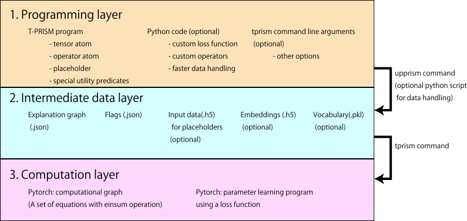

T-PRISM User’s Manual
T-PRISM 1.1 (PRISM 2.4.2a)
October 2026
PRISM is a declarative probabilistic logic programming language based on the distribution semantics (Sato 1995). It computes probabilities of goals efficiently by dynamic programming over explanation graphs, i.e., propositional formulas representing all proofs of the goals found by tabled search.
T-PRISM (Tensorized PRISM) (Kojima and Sato 2019) extends PRISM by replacing probabilities with tensors (multidimensional arrays). The semantics of T-PRISM, called the tensorized semantics, assigns tensors to ground atoms. A T-PRISM program defines tensor equations by logical rules: a conjunction of atoms corresponds to a sum-product operation written in Einstein’s notation and a disjunction corresponds to the sum of tensors. Non-linear functions such as the sigmoid and softmax functions can be inserted into the equations, which enables us to write neural networks as logic programs.
In the T-PRISM system, the symbolic part of program execution, such as unification and (recursive) search for all proofs, is carried out by the PRISM system, whereas the numerical part, i.e., the tensor computation and parameter learning, is carried out by PyTorch (Paszke et al. 2019). The two parts are connected by explanation graphs: a T-PRISM program is first compiled into an explanation graph by PRISM, and the explanation graph is then converted into a computational graph of PyTorch, which can be evaluated on large tensors and trained by gradient-based optimization. This combination allows us to write a variety of models in a uniform way: matrix and tensor computations such as matrix and tensor decompositions, knowledge graph embeddings, recursive models such as Markov chains, transitive closures computed from cyclic explanation graphs, neural networks including user-defined layers, neuro-symbolic models such as MNIST addition, and PRISM-like probabilistic models.
This manual assumes that the reader is familiar with PRISM. Please refer to the PRISM User’s Manual for PRISM programs, built-in predicates and execution flags.
The T-PRISM system consists of three layers (Figure 4.1 in Section 4.1):
the programming layer, in which users write a T-PRISM program and, optionally, Python code and options of the tprism command;
the intermediate-data layer, i.e., the files exported from a T-PRISM program by the upprism command: the explanation graph, the execution flags, input data for placeholders and tensors (embeddings);
the computation layer, in which the tprism command or the Python API converts the explanation graph into tensor equations and computes them with PyTorch, including parameter learning with a loss function.
A typical session therefore runs upprism once to export the intermediate data and then tprism train and tprism test.
Chapter 1 describes the installation and a quick start.
Chapter 2 introduces the tensorized semantics and the main concepts of T-PRISM.
Chapter 3 describes how to write T-PRISM programs.
Chapter 4 describes the architecture of the T-PRISM system, the built-in predicates for exporting data, and the execution flags.
Chapter 5 describes the tprism command.
Chapter 6 describes loss functions and operators, including user-defined ones.
Chapter 7 describes the Python API.
Chapter 8 describes the formats of the intermediate files.
Chapter 9 explains the sample programs in exs/tensor.
Chapter 10 summarizes the examples of the T-PRISM tutorial notebook.
In terms of the three layers, Chapters 3 and 4 describe the programming layer (T-PRISM programs and the predicates exporting the intermediate data), Chapter 8 the intermediate-data layer, and Chapters 5, 6 and 7 the computation layer and how to control it. Chapter 2 gives the semantics of the tensor equations computed in the computation layer.
Source code, pre-built packages and issue tracker: https://github.com/prismplp/prism
T-PRISM tutorial notebook (Google Colaboratory), linked from README.md of the repository:
https://colab.research.google.com/drive/16yzyaglTq0nTvgzZS_nJHEPleddYgxfB?usp=sharing
API documents of the T-PRISM Python package: https://prismplp.github.io/prism/tprism/tprism.html
Sample programs: exs/tensor in the PRISM package
Readers of earlier versions of this manual should note the following changes:
The computation layer is implemented with PyTorch instead of TensorFlow.
In the tprism command, --input replaces --intermediate_data_prefix, and --dataset replaces --data (the old options are still accepted). New options and modes include --const_embedding, the optimizer options, --debug_verb, and the prepare mode (Chapter 5).
Tensors and placeholder data can be exported in the NumPy (npy) format, which is available in the pre-built packages (Section 4.5).
New language features: integer indices and slicing of tensors (Section 3.5), the special tensor atom get/2 and the two-argument onehot/2 (Section 3.8), constrained and regularized tensors declared by tensor_atom/3 (Section 3.9), operators with arguments and trainable parameters (Section 6.6), and probabilistic tensors (Section 3.13, experimental).
Training supports minibatches, validation data split at the record level or at the goal level, early stopping, and several optimizers, all controlled by execution flags (Section 4.6).
A Python API is provided for building, training and inspecting models in Python programs and notebooks (Chapter 7).
The T-PRISM system consists of two parts: the PRISM system, which runs T-PRISM programs and exports explanation graphs, and the T-PRISM Python package tprism, which performs the tensor computation and parameter learning with PyTorch. This chapter describes how to install both parts and shows a small example.
The following software is required:
PRISM 2.4.2a or later built with the T-PRISM extension (the pre-built packages below include it)
Python \(\geq\) 3.10
PyTorch (https://pytorch.org/)
NumPy, h5py and scikit-learn
protobuf \(\geq\) 4.21.12 (\(\geq\) 5.27.0 on Python 3.14 or later)
The following packages are optional:
geotorch (Lezcano-Casado 2019): constrained tensors (Section 3.9)
networkx and matplotlib, or pyvis and IPython: drawing computational explanation graphs (Section 7.7)
PyPRISM (https://github.com/prismplp/pyprism): running PRISM programs from Python (Section 7.9). The tutorial notebook uses it.
The latest development version of PRISM, which includes T-PRISM, is built automatically from the GitHub repository and published as a pre-release package on the release page (https://github.com/prismplp/prism/releases). It can be installed as follows:
$ URL="https://github.com/prismplp/prism/releases/download/v2.4.2a(T-PRISM)-prerelease"
$ wget "$URL/prism_linux_dev.auto.tar.gz"
$ tar xvf prism_linux_dev.auto.tar.gz
$ export PATH=<current directory>/prism/bin:${PATH}The package contains the executables (prism/bin), the source code (prism/src) and the example programs (prism/exs). In particular, prism starts the interactive mode and upprism runs a program in batch mode (see the PRISM User’s Manual).
For Google Colaboratory, a package built on the same OS version as Colaboratory is provided. The tutorial notebook installs it in a code cell as follows ({url} in a shell command is replaced by the Python variable):
url = "https://github.com/prismplp/prism/releases/download/v2.4.2a(T-PRISM)-prerelease"
!wget "{url}/prism_linux_dev4colab.auto.zip"
!unzip -q -o prism_linux_dev4colab.auto.zipThe commands are then available as ./prism/bin/upprism, etc.
The pre-built packages are compiled with the build option USE_NPY=1 only (see below). Therefore, the json and npy formats are available for exporting tensors and placeholder data, but the hdf5 format is not (Section 4.5).
The C part has to be built and installed first, because the Prolog part is compiled with the installed binary:
$ git clone https://github.com/prismplp/prism.git
$ cd prism/src/c
$ USE_NPY=1 make -f Makefile.gmake
$ USE_NPY=1 make -f Makefile.gmake install
$ cd ../prolog
$ make
$ make install
$ export PATH=<prism directory>/bin:${PATH}The build options related to T-PRISM are given on the make command line (e.g., USE_NPY=1 USE_H5=1 make -f Makefile.gmake):
| Option | Effect |
|---|---|
USE_NPY=1 |
enables the npy format (the library is bundled; used in the pre-built packages) |
USE_H5=1 |
enables the hdf5 format; requires the HDF5 C++ library (e.g., libhdf5-dev on Ubuntu) |
USE_PB=1 |
enables the protocol buffers formats pb and pbtxt; requires libprotobuf. The bundled generated code matches protoc 3.21.12; for other versions of libprotobuf, run sh src/c/external/generate.sh before building (see doc/devel/protoc.txt) |
PLATFORM=... |
target platform: linux (default), darwin or cygwin |
The json format is always available.
The T-PRISM Python package provides the tprism command and the Python module tprism. The pip command below does not install the dependencies; please install PyTorch following https://pytorch.org/ and then the other packages beforehand:
$ pip install numpy h5py scikit-learn "protobuf>=4.21.12"
$ pip install "git+https://github.com/prismplp/prism.git#egg=t-prism&subdirectory=bin"The package can also be installed from a local copy of the repository by pip install . in the bin directory. The optional packages are installed, e.g., as follows:
$ pip install geotorch # constrained tensors
$ pip install networkx matplotlib pyvis # drawing explanation graphs
$ pip install "git+https://github.com/prismplp/pyprism.git" # PyPRISMIf the protobuf runtime causes errors (e.g., on Google Colaboratory), setting the environment variable PROTOCOL_BUFFERS_PYTHON_IMPLEMENTATION=python may help; the tutorial notebook does so.
Running upprism without arguments prints the banner of PRISM and the error message “batch file not specified”; this shows that the PRISM system works. The tprism command shows its usage with -h:
$ tprism -h
usage: tprism [-h] [--config CONFIG] [--data DATA [DATA ...]]
[--dataset DATASET [DATASET ...]]
[--intermediate_data_prefix INTERMEDIATE_DATA_PREFIX]
[--input INPUT] [--expl_graph EXPL_GRAPH] [--flags FLAGS]
[--model MODEL] [--vocab VOCAB]
[--embedding EMBEDDING [EMBEDDING ...]]
[--const_embedding CONST_EMBEDDING [CONST_EMBEDDING ...]]
...
mode
positional arguments:
mode train/test
...If geotorch is not installed, the message “[geotorch] disabled” is displayed; this is harmless unless constrained tensors are used.
tensor_atom(a,[7,7]).
tensor_atom(b,[7,7]).
tensor_atom(r,[7,7]).
%% A binary relation given by facts
rel(a,a). rel(b,b). rel(c,c). rel(d,d). rel(e,e). rel(f,f). rel(g,g).
rel(a,b). rel(b,c). rel(c,a).
rel(d,e). rel(e,f). rel(f,g). rel(g,d).
%% Modeling part
goal_ab :- tensor(a,[i,j]), tensor(b,[j,k]). % (AB)_ik = sum_j A_ij B_jk
goal_r :- tensor(r,[i,k]). % R_ik
%% Main
prism_main([]) :-
save_embedding_from_pattern([X,Y],rel(X,Y),tensor(r),'quickstart_tmp/r',npy),
save_expl_graph('quickstart_tmp/expl.json','quickstart_tmp/flags.json',
[[goal_ab,goal_r]]).quickstart.psm)As a first example, let us approximate a \(7\times 7\) binary matrix \(R\) by the product of two matrices \(A\) and \(B\), i.e., let us find \(A\) and \(B\) minimizing the root mean squared error between \(AB\) and \(R\). The T-PRISM program in Figure 1.1 represents this problem.
Lines 2–4 declare three tensor atoms a, b and r associated with \(7\times 7\) matrices.
Lines 7–9 define a binary relation rel/2 over seven entities.
Line 12 defines a goal goal_ab by the conjunction of two tensor atoms. The index j occurs twice in the body and is summed out, whereas the indices i and k remain, so goal_ab denotes the matrix product \((AB)_{ik}=\sum_j A_{ij}B_{jk}\). Line 13 defines goal_r denoting \(R_{ik}\).
In the main part, save_embedding_from_pattern/5 constructs the matrix \(R\) from the facts of rel/2 (\(R_{xy}=1\) if rel(x,y) holds and \(R_{xy}=0\) otherwise) and saves it in the NumPy format. Since a value is given to r, it is a constant, whereas a and b are trainable parameters. save_expl_graph/3 saves the explanation graph for the goal group [goal_ab,goal_r] together with the execution flags.
The program is executed with upprism, and then the parameters are trained and the goals are evaluated with tprism:
$ mkdir -p quickstart_tmp
$ upprism quickstart.psm
$ tprism train --input quickstart_tmp/ --const_embedding quickstart_tmp/r.npy.json \
--sgd_loss rmse_pair --max_iterate 1000 --sgd_learning_rate 0.01
$ tprism test --input quickstart_tmp/ --const_embedding quickstart_tmp/r.npy.json \
--sgd_loss rmse_pair --output quickstart_out.npyThe option --input quickstart_tmp/ specifies the directory containing the explanation graph and the flags, --const_embedding gives the value of r, and the loss function rmse_pair computes the root mean squared error between the first and second goals of each goal group, i.e., between \(AB\) and \(R\). During training, the loss is displayed for each epoch:
[ 1] train-loss: 0.537
...
[1000] train-loss: 0.001The trained parameters are saved in quickstart_tmp/model.best.model (and model.last.model). In the test mode, tprism loads them, evaluates the goals and saves the result in quickstart_out.npy, an array of shape \((1,2,7,7)\) (goal groups \(\times\) goals \(\times\) the matrix). For example, numpy.load("quickstart_out.npy")[0][0] is the product \(AB\), which is almost equal to \(R\).
The same computation can be written with the Python API (Chapter 7):
from tprism.loader import load_explanation_graph
from tprism.model import TprismModel
from tprism.loss import RMSEPair
graph, tensor_shapes, flags = load_explanation_graph(
"quickstart_tmp/expl.json", "quickstart_tmp/flags.json")
flags.const_embedding = ["quickstart_tmp/r.npy.json"]
flags.vocab = "quickstart_tmp/vocab.pkl"
flags.model = "quickstart_tmp/model"
flags.max_iterate = 1000
flags.sgd_learning_rate = 0.01
model = TprismModel(flags, tensor_shapes, graph, loss_cls=RMSEPair)
model.build(input_data=None, load_vocab=False, embedding_key="train")
evaluator = model.fit() # training
labels, out = model.pred() # prediction
print(out[0][0]) # AB
print(out[0][1]) # RIn terms of the architecture of the T-PRISM system (Section 4.1), quickstart.psm and the options of tprism belong to the programming layer, the files written in quickstart_tmp/ by upprism form the intermediate-data layer, and tprism train and tprism test (or the Python program above) run the computation layer.
T-PRISM’s semantics, “tensorized least model semantics” or “tensorized semantics” for short, is a tensorized generalization of the distribution semantics (Sato 1995), i.e., the existing PRISM semantics. In PRISM, the semantics assigns probability masses to ground atoms in the Herbrand base for a program whereas in T-PRISM, tensors containing real values are assigned to them. We first describe formally a class of primitive programs of T-PRISM to explain the tensorized semantics, and then describe actual programs and implementation.
Formally, a primitive program is a quadruple \(\left\langle F,C,T,q_F\right\rangle\). A primary part of the program \(\mathit{DB}=F \cup C\) is a pure Prolog (definite clause) program where \(F\) is a set of tensor atoms (see below), and \(C\) is a set of definite clauses whose head contains no tensor atom. Theoretically, we always equate a set of clauses with the set of all ground instances, and allow \(\mathit{DB}\) to be countably infinite.
In addition to this setting, we introduce a set of tensors \(T\) and a specific type of atoms called tensor atoms having a predicate name tensor/2 to identify a tensor called embedded tensor in \(T\). A tensor atom also has an index as a list of Prolog constants at the second argument to access entries of the identified tensor. For example \({\tt tensor(x,[i,j])}\) is a tensor atom having a ground atom x and an index [i,j]. It declares a second-order tensor (matrix) specified by x whose index \((i,j)\) is expressed by [i,j]. To make this correspondence rigorous, we define a function \(q_F(\cdot)\) from tensor atoms to embedded tensors such that \(q_F({\tt tensor(x,[i,j])})=x_{ij}\). In general, an index of an \(n\)-order tensor is represented as an \(n\)-length list of Prolog constants. When a tensor atom occurs multiple times in a program, different indices may be used in the program to access its entries, for example, tensor(x,[i,j]) and tensor(x,[k,l]) may occur in the program to access the same embedded tensor x. To specify the size of an embedded tensor, a special predicate tensor_atom/2 is used. For example, tensor_atom(x,[20,20]) means that a \(20 \times 20\) matrix is associated with all tensor atoms like tensor(x,_).
In this manual, as already shown, we use italic fonts for indices appearing in mathematical expressions to distinguish them from the corresponding ones appearing in a program. So for a matrix specified by x, we write an entry \(x_{ij}\) for the index [i,j].
Once a T-PRISM program is given, a set of tensor equations are determined from the program. Consider a clause having a head \(H\). Let \(H \leftarrow W_{\ell} (\ell =1,\ldots,L)\) be an enumeration of clauses about \(H\) in the program. For each \(H\), logical equations1 of the following form are derived that hold in the least model of the program. \[\begin{align} \nonumber H &\Leftrightarrow W_{1} \vee W_{2} \vee ... \vee W_{L} \\ W_{\ell} &\ensuremath{\stackrel{\mathrm{def}}{=}}B_{1\ell} \wedge B_{2\ell} \wedge ... \wedge B_{M_\ell \ell} \label{eq:logic_eqs} \end{align}\] where \(B_{*\ell}\) is a ground atom in the body \(W_{\ell}\).
The tensorized semantics is obtained by expanding the mapping \(q_F(\cdot)\) over \(F\) to \(q(\cdot)\) for the entire Herbrand base. It assigns various orders of tensors to atoms as their denotation. They are inductively defined, starting from tensor atoms, by applying two rules below to Eq. (\(\ref{eq:logic_eqs}\)).
Given a disjunction of tensor atoms, its embedding is defined as the summation of the tensor atoms, \(A\) and \(B\): \[q(A \vee B) \ensuremath{\stackrel{\mathrm{def}}{=}}q(A)+ q(B).\] The disjuncts must have the same set of free indices (see below).
Given a conjunction of tensor atoms with associated multi-dimensional arrays for embedding, embeddings of the conjunction is defined by the Einstein’s notation rule2. In the case where subscripts overlap in the same term, the rule is to take a sum for that subscript. We call the overlapping index a dummy index whereas a non-overlapping index as a free index. A set of free indices is assigned to the whole term. When the index is empty, the resulting value is a scalar (number) and the value of a conjunction of scalar embedding atoms is the product of their values.
By applying these rules to Eq. (\(\ref{eq:logic_eqs}\)) recursively, we can derive a set of tensor equations, and the working sample program in Section 9.1 is written with the definitions introduced so far.
For more flexible modeling and concise descriptions, T-PRISM introduces also the following concepts and conventions:
An index of the ground atoms except for tensor atoms is implicitly determined by the above rules. When the same ground atoms with different indices occur multiple times however, an explicit description is required. We introduce a meta description for such explicit index specification \({\tt subgoal(g,[i,j])}\) which is interpreted logically as \({\tt subgoal(g, [i, j])} \Leftrightarrow {\tt g}\) but implementationally as \(q({\tt subgoal(g,[i,j])})=g_{ij}\) for numerical calculation. This process can be regarded as rewriting the free indices not bounded by the clause.
Non-linear operations are prerequisites for a wide range of applications including deep neural networks. To make them available, T-PRISM provides operator/1 indicating a non-linear operation, e.g., operator(sigmoid) represents a sigmoid function. This built-in predicate occurs in the equation similarly to tensor/2. For example, let \(A\) and \(B\) be atoms. \(B \Leftrightarrow {\tt
operator}(f) \wedge {\tt operator}(g) \wedge A\) is interpreted as \(q(B) = g(f(q(A))) = g \circ f (q(A))\) where \(\circ\) represents function composition, i.e., the operators are applied in the order of their appearance in the clause body. While \({\tt operator}(f)\wedge
{\tt operator}(g) \wedge A\) and \({\tt operator}(g)\wedge {\tt
operator}(f) \wedge A\) are logically equivalent, they are interpreted as different equations: \(g(f(q(A)))\) and \(f(g(q(A)))\), respectively.
Although the above formulation does not include (non-tensorized) facts in the logic programming, a fact can be regarded as a tensor atom assigned one (a scalar value) like existing PRISM. Furthermore, a non-tensor predicate, which does not contain any tensor atom like Prolog standard built-in predicates, also can be regarded as having a scalar value one assignment like PRISM. In the actual implementation, these predicates are proved by Prolog engine and omitted from the equation.
By applying these rules to Eq. (\(\ref{eq:logic_eqs}\)) recursively, we can derive the following tensor equations: \[\begin{align}
\nonumber
q(H) & = q(W_1) + q(W_2) + ... + q(W_{L}) \\
q(W_{\ell}) & = op_{O_\ell} \circ \cdots \circ op_{2} \circ op_{1}
\left(\mbox{einsum}_{q,T}(q(B_{1\ell}), q(B_{2\ell}), \ldots, q(B_{M'_\ell \ell}))\right)
\label{eq:tprism_eqs}
\end{align}\] where \(\mbox{einsum}_{q,T}\) is a sum-product operation indicated by the Einstein’s notation, \(op_1, op_2, \ldots, op_{O_\ell}\) are the non-linear operations in the body \(W_\ell\) in the order of their appearance, and \(\{B_{1\ell}, B_{2\ell},\ldots, B_{M'_\ell \ell}\}\) are ground atoms except for operator/1, including tensor atoms. We consider the derived set of tensor equations as the formal denotation of the given T-PRISM program in the tensorized semantics. In this manual, we assume Eq. (\(\ref{eq:tprism_eqs}\)) is well-defined, i.e., there is no mismatch of tensor dimensions.
Theoretically T-PRISM is an implementation of the tensorized semantics with a specific execution mechanism: the symbolic part of program execution including recursion is processed by Prolog search, and the numerical and parallel part such as the sum-product computation is carried out by PyTorch. The division of labor is interfaced by explanation graphs. This section describes the main concepts of the implementation.
More concretely in T-PRISM, a program is first compiled to an explanation graph representing a set of logical equations like Eq. (\(\ref{eq:logic_eqs}\)). Next, the explanation graph is translated to a set of tensor equations like Eq. (\(\ref{eq:tprism_eqs}\)). By converting the tensor equations into a computational graph of PyTorch, the parameter training and inference are carried out efficiently by parallelization.
Let \(G\) be a top goal. The first step for generating tensor equations is to construct an explanation graph by exhaustive search that represents the set of all proof trees for \(G\) as a set of logical equations. To efficiently calculate this set, T-PRISM adopts tabled search in the exhaustive search for all proofs and applies dynamic programming to them. The tabled search is a memoization technique specialized for Prolog search (Zhou et al. 2008). It stores the results of successful calls of a goal and returns the stored answers when the same goal occurs later again. When all predicates are selected for tabling, the resulting set of tensor equations exactly corresponds to the set of logical equations representing all proofs for \(G\) in Eq. (\(\ref{eq:tprism_eqs}\)). We call it the tensorized explanation graph for \(G\). By removing redundant repetitions, Einstein’s notation enables sum-product computation much faster than that in PRISM. Hereafter, we simply call it explanation graph. In the computation layer, each equation of Eq. (\(\ref{eq:tprism_eqs}\)) is evaluated by torch.einsum followed by the operators, in a bottom-up manner from the leaves of the explanation graph. We call the resulting PyTorch graph the computational explanation graph.
We here remark on an optional assumption on explanation graphs called the acyclic condition (Sato and Kameya 2008). When the explanation graph is cyclic, it is converted to a set of recursive equations and T-PRISM can compute its least fixed point by iteratively solving the set of equations (Section 3.12). Note that various efficient inference and parameter training algorithms are available for cyclic explanation graphs (Sato and Meyer 2014; Kojima and Sato 2014) and it is shown that cycle explanation graphs bring about flexible modeling of cyclic relations (Kojima and Sato 2015) in PRISM. A sample program using a cyclic explanation graph that computes a transitive closure, following the linear algebraic approach (Sato 2017), is described in Section 9.4.
To train parameters in embedded tensors, T-PRISM supports (stochastic) gradient descent algorithms using the automatic differentiation mechanism in PyTorch. The available optimizers are Adam (Kingma and Ba 2014), AdaDelta (Zeiler 2012) and the plain stochastic gradient descent. We compute the loss of a dataset \(D\) represented as a set of goals to learn parameters. T-PRISM assumes the total loss is defined to be the average of individual goal losses: \[\begin{equation} Loss(D)=\frac{1}{|D|}\sum_{G \in D} Loss(G), \end{equation}\] to which optional terms such as regularization terms are added. Usually, \(Loss(G)\) is a function of \(q(G)\). For example, when parameter training uses a negative log likelihood loss function, the goal loss function is defined as \(Loss(G)=-\log q(G)\) where \(q(G)\) stands for the likelihood of \(G\). In general, a loss function can take a goal group, i.e., a tuple of goals, as a unit; for example, a loss function for preference learning compares the values of a positive goal and a negative goal (Section 6.2).
Here is the case of supervised learning in which \(G\) is represented as \(goal(y,x)\) where \(x\) is an input data and \(y\) is a label. \[\begin{equation} Loss(goal(y,x))=loss(y,q(goal(\_,x))) \label{eq:loss_supervision} \end{equation}\] where \(\_\) is a dummy variable and \(loss\) is a loss function such as cross-entropy loss and mean square loss, where the first argument is a correct output and the second argument is an output of the model. For the convenience of modeling, the T-PRISM system offers built-in loss functions and allows custom loss functions written in Python (Chapter 6). A loss function can be specified as an execution flag or a command-line argument for parameter training. Utilizing this T-PRISM system based on tensorized semantics with non-linear operators, various models including matrix computation, deep neural networks, and the models written by recursive programs can be designed.
The minibatch method is essential in deep learning and other optimization problems from the viewpoint of learning speed and performance (Goodfellow et al. 2016). A straightforward implementation thereof uses subgraphs of an explanation graph, and the current PRISM system adopts this naive minibatch method (Kojima and Sato 2018). However it can further be optimized by simultaneously conducting computations on multiple explanation graphs with isomorphic structure in a minibatch.
To help the calculation by isomorphic structure in a minibatch, we introduce batched explanation graphs, where the size and structure of explanation graphs in a minibatch is common, independent on inputs. We use a meta variable for inputs, called placeholder. For example, suppose the proof trees are constructed for goal(P), where P is a dummy variable. After constructing an explanation graph, actual terms are substituted for the dummy variable. The important thing here is that this substitution preserves the explanation graph in size and structure and parallelization is made possible by adopting a batched explanation graph and converting it to computational graphs in which the tensors for the placeholders have an additional axis for the minibatch (Section 3.10).
Suppose the embedded tensors are scalar. Then it is possible to define categorical distributions using \(q_F(\cdot)\) and some of T-PRISM’s operations. So the tensorized semantics can simulate the PRISM semantics where the disjunction rule is reduced to the summation of probability of exclusive events under the exclusive assumption in PRISM (Sato and Kameya 2008) and the conjunction rule is reduced to product of probabilities of independent events. Hence, the new semantics can be considered as a generalization of the distribution semantics. Although we cannot expect such a simulation to be sped up by parallelization because of scalar calculation, it is sometimes useful to be able to construct a T-PRISM program including PRISM parts. Concrete method to implementation of simulating PRISM is described in Section 9.10.
This chapter describes the elements of T-PRISM programs. A T-PRISM program is a PRISM program (a file with the extension .psm) that declares tensor atoms and uses them in clause bodies.
tensor_atom(w(0),[10,256]). % 10 output classes
tensor_atom(w(1),[256,784]). % 256 nodes in the hidden layer
tensor_atom(in(_),[784]). % 28x28 input image
%% Modeling part
output(X,Y) :- tensor(w(0),[i,j]), layer1(X,Y).
layer1(X,Y) :- operator(sigmoid), tensor(w(1),[j,k]), layer2(X,Y).
layer2(X,Y) :- tensor(in(X),[k]).
%% Main part
prism_main([train]) :-
load_clauses('./mnist/mnist.train.dat',Gs),
GoalPlaceholder=[output(_,_)],
save_placeholder_goals('./mnist_tmp/mnist_data.train',npy,GoalPlaceholder,Gs),
save_expl_graph('./mnist_tmp/mnist.expl.json','./mnist_tmp/mnist.flags.json',
GoalPlaceholder).A T-PRISM program usually consists of the following three parts, as shown in Figure 3.1:
The tensor atoms used in the program are declared with their shapes by tensor_atom/2,3 (Section 3.2). Index symbols are declared by index_atoms/1 if necessary (Section 3.4).
Definite clauses define tensor equations. Their bodies contain tensor atoms (tensor/2), operators (operator/1), tensor subgoals (subgoal/2) and ordinary Prolog goals.
prism_main/1 exports the explanation graph of the goals, the execution flags and, optionally, the input data and tensors to the intermediate files read by tprism (Chapter 4).
A T-PRISM program is executed in batch mode by upprism: upprism prog.psm \(a_1\) \(a_2\) … loads prog.psm and calls prism_main([\(a_1\),\(a_2\),…]), where the arguments are given as atoms (use parse_atom/2 to convert, e.g., ’100’ into a number). For example, upprism mnist.psm train calls prism_main([train]).
When a program is loaded, the translator of PRISM rewrites the tensor-related atoms into PRISM’s switches: tensor(\(X\),\(I\)) is translated into msw(tensor(\(X\)),\(I\)), and operator(\(O\)) into a special switch representing the operator. Consequently, the tensor atoms and operators used in each proof are recorded in the explanation graph. The built-in predicate probf/1 of PRISM displays such explanation graphs and is useful to check the structure of the tensor equations:
?- probf(rel(1,3,0)).
rel(1,3,0)
<=> tensor(v(1),[i]) & tensor(v(3),[i]) & tensor(r(0),[i])Every tensor atom used in a program must be declared by tensor_atom/2 or tensor_atom/3.
tensor_atom(Atom,Shape)declares that each ground instance of Atom is associated with a tensor of shape Shape, a list of positive integers.
tensor_atom(Atom,Shape,Type)declares a tensor atom with a type Type for constraints and regularization (Section 3.9). tensor_atom/2 is equivalent to the type no.
For example:
tensor_atom(w(0),[10,256]). % a 10 x 256 matrix w(0)
tensor_atom(v(_),[20]). % vectors v(0), v(1), ... of size 20
tensor_atom(rel1,[N,N]) :- dim(N). % the shape can be computed by a clause bodyDifferent ground instances such as v(0) and v(1) denote different tensors, whereas all occurrences of the same ground tensor atom in a program denote the same tensor; parameters are shared in this way. It is recommended to write the declarations together, because B-Prolog warns about predicates that are not defined contiguously.
In the computation layer, the tensor associated with a tensor atom is determined as follows:
The special tensor atoms onehot/1,2 and get/2 are associated with the tensors described in Section 3.8.
A tensor atom whose value is given by an embedding file is associated with the given tensor, which is not trained (Section 8.4). Embedding files are given by the options --embedding and --const_embedding of tprism.
The other tensor atoms are associated with trainable parameters. They are initialized randomly: matrices by the Kaiming uniform initialization and the other tensors by the uniform distribution on \([-0.1,0.1]\).
Tensors are identified by names derived from the tensor atoms, e.g., tensor_w_0_ for w(0), in embedding files and model files (Section 8.5).
tensor(Atom,Index) in a clause body refers to the tensor of Atom with an index Index, a list whose length equals the order of the tensor. Each element of the list is an index symbol, an integer or a range (Section 3.5). vector/2 and matrix/2 are synonyms of tensor/2, which may improve readability.
The value of a clause body is computed as follows:
Ordinary Prolog goals (built-in predicates, facts, etc.) are executed by Prolog as usual. They do not contribute to the tensor computation, i.e., they have the value one.
The tensor atoms and the tensor-valued subgoals in the body are combined by the sum-product operation of Einstein’s notation (computed by torch.einsum): an index symbol occurring more than once in the body is summed out, and the symbols occurring once are the free indices of the result.
The result is multiplied by the values of the scalar-valued subgoals.
The operators in the body are applied to the result (Section 3.6).
The values of all the clauses used to prove a goal, i.e., all the explanations of the goal, are summed. These values must have the same free indices; otherwise the warning “missmatch indices” is displayed. Some examples are shown below:
| Clause | Equation |
|---|---|
x :- tensor(m,[i,j]), tensor(v,[j]). |
\(x_i=\sum_j m_{ij}v_j\) |
x :- tensor(a,[i,j]), tensor(b,[j,k]). |
\(x_{ik}=\sum_j a_{ij}b_{jk}\) |
x :- tensor(u,[i]), tensor(v,[j]). |
\(x_{ij}=u_i v_j\) |
x :- tensor(u,[i]), tensor(v,[i]). |
\(x=\sum_i u_i v_i\) |
x :- tensor(u,[i]), tensor(v,[i]), tensor(w,[i]). |
\(x=\sum_i u_i v_i w_i\) |
x :- tensor(u,[i,j]), tensor(d,[j]), tensor(v,[j,k]). |
\(x_{ik}=\sum_j u_{ij} d_j v_{jk}\) |
x :- tensor(m,[j,i]). |
\(x_{ij}=m_{ji}\) |
x :- tensor(a,[i,j]), y. |
\(x_{ik}=\sum_j a_{ij}y_{jk}\), \(y_{jk}=b_{jk}\) |
x :- tensor(m,[i,j]). |
\(x_{ij}=m_{ij}+n_{ij}\) |
Index symbols are Prolog atoms such as i, j and a1. Note the following points:
Scope: the free indices of a subgoal keep the names given in its definition, and they are matched by name with the indices of the calling clause. In x :- tensor(a,[i,j]), y. with y :- tensor(b,[j,k])., the index j of y is shared with a and summed out. The dummy indices of y are local to the clauses of y, since they are already summed out. Use subgoal/2 to rename the free indices of a subgoal (Section 3.7).
Axis order: the tensor of a goal is stored as an array whose axes are its free indices sorted as strings (in the order of the character codes, e.g., a1, a2, i, i10, i2, j). This order does not change the meaning of the equations, because each axis is identified by its index symbol: x :- tensor(m,[j,i]). denotes \(x_{ji}=m_{ji}\), and y :- x, tensor(v,[j]). gives \(y_i=\sum_j m_{ji}v_j\). The array of x, however, has the axes (i,j), i.e., it is the transpose of the array of m. The order of the axes matters only where axes are handled by their positions: the tensors of goals taken out to Python (e.g., the outputs of the test mode and pred), operators depending on the axes, such as softmax (applied along the last axis, i.e., the alphabetically last free index) and custom operators, the renaming by subgoal/2 (Section 3.7), and loss functions comparing two goals elementwise, such as rmse_pair.
Reserved symbol: the symbol b is reserved for the axis of minibatches (Section 3.10); do not use b as an index symbol.
index_atoms/1The translator collects the index symbols written in the tensor atoms of clause bodies, and only these symbols can be used in the index lists of tensor atoms. When an index list is not written in a clause body but passed through a variable, as in
prob_tensor_msw(X,Index) :- operator(softmax), tensor(X,Index).the symbols cannot be collected automatically, and they must be declared by index_atoms/1:
index_atoms([i,j]).The declared symbols are added to the collected ones. Integers passed as indices through variables (Section 3.5) must be declared as well, e.g., index_atoms([i,j,k|N]) :- N @= [X : X in 0..4]. If an index symbol is neither collected nor declared, the call of the tensor atom simply fails, and the corresponding proofs are missing from the explanation graph.
An element of an index list can also be an integer or a range:
An integer \(n\) fixes the position along the axis to \(n\) (0-based) and removes the axis. For a third-order tensor x, tensor(x,[1,i,j]) denotes the matrix \(x_{1ij}\) with the free indices \(i\) and \(j\), and tensor(x,[1,2,3]) denotes the scalar \(x_{123}\).
r(Sym,Start,End) and r(Sym,Start,End,Step) select the range from Start to End with the step Step (default: 1) along the axis and assign the index symbol Sym to it, like the slice Start:End:Step of Python (NumPy). As in Python, End is exclusive, and negative values count from the end of the axis. The atom - denotes an omitted bound, i.e., the beginning of the axis for Start and the end of the axis for End: r(i,1,-) corresponds to the slice 1: and r(i,-,5) to :5. r(Sym,Start) is equivalent to r(Sym,Start,-).
For example, for a \(100\times 100 \times 100\) tensor x, tensor(x,[r(i,0,10),r(j,0,20),r(k,0,30)]) denotes a \(10\times 20\times 30\) subtensor with the indices \(i\), \(j\) and \(k\). For a \(7\times 7\times 3\) tensor relx:
goal :- tensor(relx,[i,j,k]). % shape (7,7,3)
goal :- tensor(relx,[i,3,1]). % shape (7): relx[:,3,1]
goal :- tensor(relx,[i,r(j,0,3),1]). % shape (7,3): relx[:,0:3,1]The index expressions can be checked in Python with the module tprism.tensor_index:
import torch
from tprism.tensor_index import parse_tensor_index, extract_tensor
X = torch.zeros((100, 100, 100))
index = [parse_tensor_index(s) for s in ["i", "r(i,10,20)", "r(j,-,20)"]]
A, _, _ = extract_tensor(X, index)
print(A.shape) # torch.Size([100, 10, 20])operator(Op) in a clause body applies the operator Op to the value of the body, i.e., to the result of the sum-product operation of the tensor atoms and subgoals in the body. The built-in operators are listed in Section 6.5; for example:
layer1(X,Y) :- operator(sigmoid), tensor(w(1),[j,k]), layer2(X,Y).denotes \(q({\tt layer1(X,Y)})_j=\sigma(\sum_k w^{(1)}_{jk}\, q({\tt layer2(X,Y)})_k)\). Note the following points:
When a clause body contains several operators, they are applied in the order of their appearance: the body operator(f), operator(g), \(A\) denotes \(g(f(q(A)))\). Each operator name may occur at most once in a clause; to compose more operators, define auxiliary predicates, one for each layer, as in Figure 3.1.
An operator may have arguments, e.g., operator(conv_block(1,3,l1)). The arguments are passed to the implementation of the operator as strings (Section 6.6).
An operator is instantiated once for each combination of a name and arguments; all occurrences of the same operator term share the same instance and hence the same parameters if the operator has trainable parameters. To use different parameters, add an argument that distinguishes them, as l1 above.
An operator may occur in a clause without tensor atoms. Then its input is the constant one; this is useful for operators that generate tensors by themselves (Section 10.10).
subgoal(Goal,Index) calls Goal and renames the free indices of its tensor to Index: the \(n\)-th free index of Goal in the alphabetical order is renamed to the \(n\)-th element of Index. Logically, subgoal(Goal,Index) is equivalent to Goal. Tensor subgoals are needed, in particular, in recursive definitions, where the same predicate is used with different index names. For example, in the Markov chain program (Section 9.3),
transition(T,0) :- observe_state(T,[i]).
transition(T,N) :-
N>0, NextN is N-1,
prob_tensor_msw(tr,[i,j]),
subgoal(transition(T,NextN),[j]).the free index i of transition(T,NextN) is renamed to j so that it is multiplied by the transition matrix and summed out: \(q({\tt transition(T,N)})_i=\sum_j P_{ij}\,q({\tt transition(T,N-1)})_j\). subgoal/2 is implemented with the internal operator reindex.
onehot/1,2A tensor atom onehot(\(V\)) with an integer \(V\) denotes the one-hot vector whose \(V\)-th element (0-based) is one and the other elements are zero. The size is given by the declaration:
tensor_atom(onehot(_),[10]).
observe_state(S,Index) :- tensor(onehot(S),Index).For example, onehot(0) denotes \((1,0,\ldots,0)\) and onehot(3) denotes \((0,0,0,1,0,\ldots,0)\). An inner product with a one-hot vector extracts an element: \(\sum_i p_i\,{\rm onehot}(V)_i=p_V\). To use one-hot vectors of different sizes in a program, use onehot(\(V\),Tag), whose second argument only distinguishes the declarations:
tensor_atom(onehot(_,10),[10]).
tensor_atom(onehot(_,19),[19]).The value \(V\) must be an integer; it cannot be a placeholder.
get/2A tensor atom get(Name,\(N\)) denotes the \(N\)-th slice (0-based) along the first axis of the tensor Name given by an embedding file. For example, when an embedding file contains a \(1000\times 784\) array for in (the dataset name tensor_in_), get(in,5) denotes the 784-dimensional vector in the sixth row. The declaration specifies the shape of a slice:
tensor_atom(get(in,_),[784]).
layer2(X,Y) :- tensor(get(in,X),[k]).This is convenient for a dataset stored as one array, such as images (Section 9.8). The tensor Name must be given by an embedding file.
tensor_atom(Atom,Shape,Type) declares a tensor atom with a type. The following types constrain the trainable parameter of the tensor atom to a manifold using geotorch (Lezcano-Casado 2019), which must be installed (Section 1.3):
| Type | Constraint |
|---|---|
symmetric |
symmetric matrices |
skew |
skew-symmetric matrices |
sphere |
tensors of unit norm |
orthogonal |
orthogonal matrices (orthonormal rows or columns) |
almost_orthogonal |
matrices whose singular values are close to one |
grassmannian |
points of a Grassmannian manifold |
low_rank(\(R\)) |
matrices of rank at most \(R\) (default: 1) |
fixed_low_rank(\(R\)) |
matrices of rank \(R\) (default: 1) |
invertible |
invertible matrices |
sln |
matrices of determinant one |
positive_definite |
positive definite matrices |
positive_semidefinite |
positive semidefinite matrices |
positive_semidefinite_low_rank(\(R\)) |
positive semidefinite matrices of rank at most \(R\) |
positive_semidefinite_fixed_low_rank |
positive semidefinite matrices of a fixed rank |
The following types add a regularization term to the loss:
| Type | Regularization |
|---|---|
sparse |
the \(L_1\) norm of the tensor |
sparse(\(C\)) |
\(C\) times the \(L_1\) norm of the tensor |
The regularization terms are displayed in the training log, e.g., as train-sparse_tensor_m_-loss. For example, the singular value decomposition \(X\approx UDV\) is represented with orthogonal matrices \(U\) and \(V\) and a vector \(d\) of singular values (Section 10.4):
tensor_atom(u,[7,7],orthogonal).
tensor_atom(v,[7,7],orthogonal).
tensor_atom(d,[7]).
goal_udv :- tensor(u,[i,j]), tensor(d,[j]), tensor(v,[j,k]).A placeholder is a special atom $placeholder\(N\)$ (\(N=1,2,\ldots\)) that represents an input value in an explanation graph (Section 2.2). Placeholders are introduced by save_placeholder_goals/2-4 (Section 4.3). In the main part of Figure 3.1,
load_clauses('./mnist/mnist.train.dat',Gs), % Gs=[output(0,5),output(1,0),...]
GoalPlaceholder=[output(_,_)],
save_placeholder_goals('./mnist_tmp/mnist_data.train',npy,GoalPlaceholder,Gs),
save_expl_graph('./mnist_tmp/mnist.expl.json','./mnist_tmp/mnist.flags.json',
GoalPlaceholder).save_placeholder_goals/4 matches the goals Gs with the pattern output(_,_), saves the values of the variables in each matched goal as a record, and binds the variables to placeholders: after the call, GoalPlaceholder is [output(’$placeholder1$’,’$placeholder2$’)]. Then save_expl_graph/3 constructs the explanation graph only once for the pattern, instead of once for each goal. The records are given to tprism by the option --dataset.
In the computation, a tensor atom containing a placeholder, e.g., in(’$placeholder1$’), denotes a batch of tensors: its tensor has an additional first axis b for the minibatch, whose size is given by the flag sgd_minibatch_size, and the tensors of the goals depending on it also have this axis. The records are fed to the placeholders minibatch by minibatch. A tensor atom containing a placeholder is associated with tensors as follows:
If no embedding file gives the tensor, the tensor atom denotes a trainable embedding table: for each value of the placeholder, a different vector (or tensor) is used. For example, the tensor atom v(’$placeholder1$’) in DistMult (Section 9.2) selects the vector of an entity by its identifier. The correspondence between the values and the rows of the table is stored in the vocabulary file, which is created in training and reused in test.
If an embedding file gives the tensor, e.g., an array tensor_in_ of images for in(X), the value of the placeholder selects a row of the array (0-based) as get/2 does: for a record with the value 5 of X, in(X) denotes the sixth row. The values are used as the row numbers directly, without the vocabulary file. In exs/tensor/mlp, the goal output(\(k\),\(y_k\)) refers to the \(k\)-th image (Section 9.6).
The following restrictions apply in the current version:
The values of placeholders must be integers.
A tensor atom may contain at most one placeholder.
A placeholder that does not occur in any tensor atom, such as the label Y of output(X,Y), is allowed and can be used by a loss function, e.g., ce_pl (Section 6.3). For such a placeholder, tprism displays the warning “no conversion from values to indices”, which is harmless.
The patterns can be grouped as goal groups (Section 6.2): for example, [[rel(_,_,0),rel(_,_,0)]] introduces four placeholders for pairs of a positive and a negative example.
Since a T-PRISM program is a PRISM program, the features of PRISM and Prolog can be used together:
Ordinary Prolog predicates and facts are evaluated by Prolog and have the value one in the tensor equations. They can be used to compute indices and names of tensor atoms, to enumerate candidates (e.g., member/2), to load data (load_clauses/2,3), and so on.
An ordinary random switch msw/2 may occur in a T-PRISM program, but its probability is exported as a constant factor when the explanation graph is saved, and it is not trained by tprism. To use trainable categorical distributions, represent them by tensors as simulated_msw/2 in Section 9.10.
When a goal depends on itself, as in the transitive closure program (Section 9.4):
:- set_prism_flag(error_on_cycle,off).
rel2 :- operator(min1), rel2_helper.
rel2_helper :- tensor(rel1,[i,j]), subgoal(rel2,[j,k]).
rel2_helper :- tensor(rel1,[i,k]).the explanation graph is cyclic. Set the PRISM flag error_on_cycle to off to construct cyclic explanation graphs. The resulting tensor equations are solved by fixed-point iteration: starting with zero tensors for the goals on cycles, the equations are evaluated repeatedly until the values do not change (the squared change becomes less than \(10^{-20}\)) or the number of iterations reaches the flag max_iterate, whose default in tprism is 10. Use the option --cycle of tprism: in the test mode, the solution is saved as the output (Section 9.4), whereas the train mode only runs the iteration. In Python, call TprismModel.solve() (Section 7.5). In the current version, the parameters are not trained for cyclic explanation graphs: the tensors are given by embedding files and only the solution of the equations is computed.
prob_tensor(normal,[Mean,Var]) in a clause body denotes a sample \(z\) from the normal distribution \({\cal N}(\mu,{\rm diag}(\sigma^2))\) drawn by the reparameterization trick (Kingma and Welling 2014), where \(\mu=q({\it Mean})\) and \(\sigma^2={\rm softplus}(q({\it Var}))\) (computed elementwise). Mean and Var are goals whose tensors have the same shape, and the sample has the free indices of Mean. In training, the Kullback-Leibler divergence \(\mathrm{KL}({\cal N}(\mu,{\rm diag}(\sigma^2))\;||\;{\cal N}(0,I))\) is added to the loss, as in variational autoencoders:
tensor_atom(m,[4]).
tensor_atom(s,[4]).
tensor_atom(w,[2,4]).
mu :- tensor(m,[i]).
sigma :- tensor(s,[i]).
out :- tensor(w,[j,i]), prob_tensor(normal,[mu,sigma]).This feature is experimental, and normal is the only supported distribution. Since the name prob_tensor/2 is reserved for this feature, do not define a predicate prob_tensor/2 in programs.

The architecture of the T-PRISM system is shown in Figure 4.1. The system consists of three layers: the programming layer, where users write programs and settings, the intermediate-data layer, which consists of files, and the computation layer, where PyTorch carries out the tensor computation. The upprism command connects the programming layer to the intermediate-data layer, and the tprism command (or the Python API) connects the intermediate-data layer to the computation layer. This division corresponds to the two parts of the execution of a T-PRISM program: the symbolic part, i.e., the search for all proofs of the goals by PRISM, and the numerical part, i.e., the computation of the tensor equations derived from the proofs. Since the layers communicate only through files, each step can be run separately, and the files can be inspected or produced by other programs such as Python scripts. Although users directly operate only the programming layer, they should understand the entire flow.
In the programming layer, users write the following three kinds of inputs. Only the T-PRISM program is mandatory.
a PRISM program (.psm) defining the model by logic. It contains tensor atoms declared by tensor_atom/2,3 and used by tensor/2, operator atoms (operator/1) for non-linear functions, placeholders for input data, and calls of the special utility predicates, such as save_expl_graph/3, which export the intermediate data (Chapter 3 and this chapter). Execution flags for training can also be set in the program (Section 4.6).
custom loss functions and custom operators, which are loaded in the computation layer (Chapter 6), and scripts for faster data handling, which write tensors and placeholder data directly in the intermediate-data layer (Chapter 8). The Python API (Chapter 7) can be used instead of the tprism command to control the computation layer from Python programs and notebooks.
tprism command-line arguments (optional)the locations of the intermediate files and other options such as training settings (Chapter 5). Options with the same names as execution flags override the flags set in the T-PRISM program.
The intermediate-data layer contains the files listed in Table 4.1. The figure shows their typical formats; the other available formats are listed in Section 4.5 and Chapter 8.
| File | Created by | Content and use |
|---|---|---|
Explanation graph (.json) |
save_expl_graph/0-5 |
the explanation graph of the goals with tensor atoms and operators, i.e., the structure of the tensor equations |
Flags (.json) |
save_expl_graph/0-5 |
the execution flags, and the shapes and types of the tensor atoms |
Input data for placeholders (.h5, .json, .npy; optional) |
save_placeholder_goals/2-4, save_placeholder_data/2-4, or Python |
records of values fed to placeholders (option --dataset); needed only for programs with placeholders |
Embeddings (.h5, .npy; optional) |
save_embedding_from_pattern/4,5 and its variant, or Python |
tensors given to tensor atoms, e.g., input images and fixed matrices (options --embedding and --const_embedding) |
Vocabulary (.pkl; optional) |
tprism (train and prepare modes) |
the correspondence between the values of placeholders and the rows of embedding tables; created automatically and reused in the test mode |
In addition, the computation layer writes its results, i.e., the model files with the trained parameters and the output files with the predicted tensors (Section 5.6).
The computation layer is implemented with PyTorch in the T-PRISM Python package.
The explanation graph is converted into a set of tensor equations (Eq. (\(\ref{eq:tprism_eqs}\))), and each equation is computed by einsum and the operators, from the tensor atoms at the leaves of the explanation graph up to the goals (Section 2.2). Tensor atoms with placeholders give tensors with a minibatch axis (Section 3.10), and cyclic explanation graphs are solved by fixed-point iteration (Section 3.12).
A loss function (Chapter 6) computes the loss of each goal group from the tensors of the goals, the gradients are computed by automatic differentiation, and an optimizer updates the trainable tensors and the parameters of custom operators (Section 5.5).
upprismruns the T-PRISM program in batch mode: PRISM searches for all proofs of the goals by tabled search and constructs the explanation graph, and the utility predicates called in prism_main/1 save it with the other intermediate data. Python scripts may write tensors and placeholder data directly instead (“optional python script for data handling” in the figure).
tprism(or the Python API) reads the intermediate files, builds the computational graph, and carries out training or prediction.
A standard procedure is executed by the following commands:
$ upprism <T-PRISM program> [arguments ...]
$ tprism train [options ...]
$ tprism test [options ...]The search by Prolog is carried out only once by upprism. As long as the program and the goals are the same, the training can be repeated with different options without running upprism again, and the placeholder data and embeddings can be replaced by other files of the same structure; for example, the training data and the test data of exs/tensor/mlp share one explanation graph (Section 9.6).
The quick start in Section 1.5 goes through the layers as follows:
| Layer or command | Quick start |
|---|---|
| Programming layer | quickstart.psm: the tensor atoms a, b, r, the goals goal_ab and goal_r, and prism_main/1 calling save_embedding_from_pattern/5 and save_expl_graph/3; the options --sgd_loss rmse_pair --max_iterate 1000 … |
upprism |
upprism quickstart.psm |
| Intermediate-data layer | quickstart_tmp/expl.json, flags.json, and the embedding of r (r.npy, r.npy.json) |
tprism |
tprism train … and tprism test … |
| Computation layer | \((AB)_{ik}=\sum_j A_{ij}B_{jk}\) by einsum; the RMSE between \(AB\) and \(R\); the updates of \(A\) and \(B\) by Adam. The results are model.best.model, vocab.pkl and quickstart_out.npy |
| Purpose | What to change |
|---|---|
| change the model (the equations) | the T-PRISM program (Chapter 3); run upprism again |
| change the goals | the goals given to save_expl_graph (Section 4.2); run upprism again |
| change the input data | the placeholder data or the embeddings (Section 4.3, Section 4.4, Chapter 8) |
| change the training settings | the options of tprism (Chapter 5) or the execution flags (Section 4.6) |
| add a non-linear function or a neural network layer | a custom operator (Section 6.6) |
| use another loss function | a built-in or custom loss function (Chapter 6) |
| analyze or reuse the results in Python | the Python API (Chapter 7) |
JSON (extension .json) is mainly used for structured data, and NumPy (.npy) and HDF5 (.h5) files are used for multidimensional arrays. The schema of the structured data is defined by protocol buffers (src/c/external/expl.proto); hence the structured data can also be saved in the protocol buffers formats, which can be read from other programming languages. The formats are described in Chapter 8.
The following predicates construct the explanation graph of the goals and save it, together with the execution flags and the shapes and types of the tensor atoms:
save_expl_graphsaves the explanation graph as expl.json and the flags as flags.json. The goals are read from the data file specified by the flag data_source (by default, the file declared by data/1), as in learn/0 of PRISM.
save_expl_graph(Goals)saves the explanation graph for Goals as expl.json and the flags as flags.json.
save_expl_graph(ExplFile,FlagFile)saves them as ExplFile and FlagFile, where the goals are read from the data file.
save_expl_graph(ExplFile,FlagFile,Goals)saves the explanation graph for Goals as ExplFile and the flags as FlagFile.
save_expl_graph(ExplFile, FlagFile, ExplMode, FlagMode, Goals)specifies also the formats: json (default), pb (protocol buffers binary) or pbtxt (protocol buffers text). The formats pb and pbtxt require the build option USE_PB=1.
Goals is a list of goals or goal groups, i.e., lists of goals. A goal that is not in a list forms a goal group by itself. For example, [g1,g2,g3] gives three goal groups, and [[g1,g2],[g3,g4]] gives two goal groups of pairs. The explanation graph contains all the goals, and the goal groups are recorded as the root list. Loss functions are computed for each goal group (Section 6.2). For example, the following saves the explanation graph for the goals in sample.dat:
prism_main([]) :-
load_clauses('sample.dat',Gs),
save_expl_graph('sample_tmp/expl.json','sample_tmp/flags.json',Gs).The directory of the output files must exist. While saving, upprism prints messages such as #goals: 0(2) (the progress of the search and the number of goals in parentheses) and [SAVE:json] followed by the name of each saved file. If PRISM cannot find any proof of a goal, the execution stops with an error (Section 5.8).
The following predicates save the current values of the execution flags as FlagFile (default: flags.json) in the format FlagMode (default: json):
save_flags
save_flags(FlagFile)
save_flags(FlagFile,FlagMode)
Note that the flag files written by these predicates do not contain the shapes of the tensor atoms, which tprism requires; use the flag file written by save_expl_graph.
The following predicates construct placeholders and records of their values from goals (Section 3.10) and save the records as Filename in the format Mode:
save_placeholder_goals(PlaceholderGoals,Goals)
save_placeholder_goals(Filename,PlaceholderGoals,Goals)
save_placeholder_goals(Filename,Mode,PlaceholderGoals,Goals)
Mode is one of npy, json, hdf5, pb and pbtxt. The default file name and format are data.h5 and hdf5, which require the build option USE_H5=1; with the pre-built packages, use npy or json.
PlaceholderGoals is a list of patterns, i.e., goals (or goal groups) containing variables, and Goals is a list of ground goals (or goal groups). For each pattern, the elements of Goals matching the pattern are collected, and the values of the variables in each matched element form a record. The records of the \(n\)-th pattern are saved as the \(n\)-th goal (with the goal ID \(n-1\)) in the file. Finally, the variables in PlaceholderGoals are bound to the placeholder atoms ’$placeholder1$’, ’$placeholder2$’, …in the order of appearance, so that the explanation graph can be constructed for the patterns. For example:
prism_main([]) :-
Goals=[pred(1),pred(2),pred(3),pred(5),pred(8)],
PlaceholderGoals=[pred(_)],
save_placeholder_goals('data',npy,PlaceholderGoals,Goals).Here, PlaceholderGoals becomes [pred(’$placeholder1$’)], and the records \((1), (2), (3), (5), (8)\) are saved for $placeholder1$. For a more complex example with two predicates:
prism_main([]) :-
Goals=[pred1(1,4),pred1(2,3),pred1(3,2),pred2(5,1),pred2(8,0)],
PlaceholderGoals=[pred1(_,_),pred2(_,_)],
save_placeholder_goals('data',npy,PlaceholderGoals,Goals),
save_expl_graph('expl.json','flags.json',PlaceholderGoals).PlaceholderGoals becomes
[pred1('$placeholder1$','$placeholder2$'),pred2('$placeholder3$','$placeholder4$')]and the following records are saved:
| goal ID | pattern | placeholders | records |
|---|---|---|---|
| 0 | pred1(_,_) |
$placeholder1$, $placeholder2$ |
\((1,4),(2,3),(3,2)\) |
| 1 | pred2(_,_) |
$placeholder3$, $placeholder4$ |
\((5,1),(8,0)\) |
The output files depend on the format:
npyFilename is a directory, which is created if necessary. The records of the goal \(k\) are saved as an integer matrix (the number of records \(\times\) the number of placeholders) in Filename/placeholder_\(k\).npy, and the list of the files and placeholders is saved in Filename/placeholder.npy.json. Give the latter to tprism.
json, pb, pbtxtThe records are saved in a file whose name is Filename followed by a suffix \(n\)_\(m\) (e.g., data.json1_0 for Filename data.json and one pattern), and a large number of records is split into several files. Use the extension .json for Filename in the json format so that tprism recognizes the files.
hdf5The records are saved in an HDF5 file Filename with a group for each goal (Section 8.3).
The following predicates directly save a list of placeholders and their records without pattern matching:
save_placeholder_data(Placeholders,Data)
save_placeholder_data(Filename,Placeholders,Data)
save_placeholder_data(Filename,Mode,Placeholders,Data)
Placeholders is a list (one element for each goal) of lists of placeholder atoms, and Data is a list (one element for each goal) of lists of records, each of which is a list of values. For example, the two examples above correspond to the following arguments, respectively:
Placeholders=[['$placeholder1$']],
Data=[[[1],[2],[3],[5],[8]]]
Placeholders=[['$placeholder1$','$placeholder2$'],['$placeholder3$','$placeholder4$']],
Data=[[[1,4],[2,3],[3,2]],[[5,1],[8,0]]]The following predicates construct a tensor from the solutions of a goal and save it as an embedding file, which gives the tensor to a tensor atom:
save_embedding_from_pattern(Vars,Pattern,Target,FileNameBase)
save_embedding_from_pattern(Vars,Pattern,Target,FileNameBase,Mode)
save_embedding_from_pattern_with_value(Vars,Val,Pattern,Target,FileNameBase)
save_embedding_from_pattern_with_value(Vars,Val,Pattern,Target,FileNameBase,Mode)
save_embedding_from_pattern collects the instances of the list of variables Vars for which the goal Pattern succeeds (as findall/3), and constructs a tensor whose axes correspond to the elements of Vars: for each axis, the distinct values of the corresponding variable are sorted in the standard order of terms and numbered from 0. The element at the position of each instance is set to one, and the other elements are zero. save_embedding_from_pattern_with_value sets the element to the value of Val instead of one. Target is a term tensor(Name), which specifies the tensor atom Name to which the tensor is given. Mode is hdf5 (default) or npy.
For example, given the facts
rel1(a,a). rel1(b,b). rel1(c,c).
rel1(a,b). rel1(b,c). rel1(c,a).save_embedding_from_pattern([X,Y],rel1(X,Y),tensor(rel1),’tmp/embedding’,npy) constructs a \(3\times 3\) binary matrix (the adjacency matrix of the relation) whose \((x,y)\) element is one if and only if rel1(\(x\),\(y\)) holds, and associates it with the tensor atom rel1. The relation does not have to be given by facts; any goal, e.g., a rule computing a relation, can be used as Pattern (Section 10.1). Note that the shape of the tensor is the number of distinct values for each axis, which must agree with the declaration by tensor_atom/2. The lists of the values are displayed, e.g., [[a,b,c],[a,b,c]].
The output files are as follows:
npythe tensor is saved in FileNameBase.npy, and its metadata (the file name, the group train, the dataset name and the shape) in FileNameBase.npy.json. Give the latter to tprism.
hdf5the tensor is saved in the group train of FileNameBase.h5. This format supports only vectors and matrices and requires the build option USE_H5=1.
In both formats, the table of the values for each axis is saved in FileNameBase.txt, a tab-separated file with the columns axis, index and label. The dataset name of the tensor is derived from Target, e.g., tensor_rel1_ (Section 8.5).
The formats supported by the built-in predicates depend on the build options of PRISM (Section 1.2):
| Predicates | json |
npy |
hdf5 |
pb, pbtxt |
|---|---|---|---|---|
save_expl_graph/0-5 |
default | – | – | USE_PB |
save_flags/0-2 |
default | – | – | USE_PB |
save_placeholder_goals/2-4,save_placeholder_data/2-4 |
yes | USE_NPY |
default (USE_H5) |
USE_PB |
save_embedding_from_pattern/4,5,save_embedding_from_pattern_with_value/5,6 |
– | USE_NPY |
default (USE_H5) |
– |
The pre-built packages are built with USE_NPY=1; hence, specify npy (or json for placeholder data) explicitly. When a format is not available, an error message such as “[ERROR] hdf5 format is not implemented (please compile prism with the USE_H5 option)” is displayed. Note that the tprism command reads HDF5 files by h5py, so HDF5 files created by Python scripts can be used regardless of the build options.
The training and computation in tprism are controlled by execution flags of PRISM. They are set in a program by set_prism_flag/2, e.g.,
:- set_prism_flag(sgd_learning_rate,0.01).
prism_main([]) :-
set_prism_flag(max_iterate,100),
set_prism_flag(sgd_loss,ce_pl('$placeholder2$')),
...
save_expl_graph('tmp/expl.json','tmp/flags.json',Goals).and the values at the time of save_expl_graph are exported to the flag file. The same settings can be given to tprism as command-line options with the same names (e.g., --sgd_learning_rate 0.01). The values are merged in the following order (weakest first): the defaults of tprism, the values in the flag file, and the command-line options. The flags related to T-PRISM are listed below:
| Flag | Default | Description |
|---|---|---|
sgd_minibatch_size |
1 | the number of records in a minibatch (with placeholder data) |
max_iterate |
10 | the maximum number of epochs (iterations for cyclic programs) |
sgd_learning_rate |
0.0001 | the learning rate |
sgd_loss |
base_loss |
the loss function (Section 6.1) |
sgd_optimizer |
adam |
the optimizer: adam, adadelta or sgd |
sgd_weight_decay |
0.01 | the weight decay (the coefficient of the \(L_2\) penalty) |
sgd_adam_beta |
0.9 | \(\beta_1\) of Adam |
sgd_adam_gamma |
0.999 | \(\beta_2\) of Adam |
sgd_adam_epsilon |
\(10^{-8}\) | \(\epsilon\) of Adam |
sgd_adadelta_gamma |
0.95 | \(\rho\) of AdaDelta |
sgd_adadelta_epsilon |
\(10^{-8}\) | \(\epsilon\) of AdaDelta |
sgd_patience |
3 | early stopping: epochs allowed without improvement |
sgd_valid_ratio |
0.1 | the ratio of validation records (0 disables validation) |
sgd_goal_valid_ratio |
0.0 | the ratio of validation goals (0 disables it) |
Note the following points:
The defaults of sgd_learning_rate, sgd_weight_decay and sgd_optimizer are those of PRISM, which are always exported to the flag file. The other flags are exported as default (unset) unless they are set in the program, and then the defaults of tprism apply.
max_iterate accepts inf. The option --epoch of tprism is an alias of --max_iterate.
sgd_penalty is the old name of sgd_weight_decay and is still accepted.
Some of the flags are also used by the learning procedures of PRISM; see the PRISM User’s Manual.
A placeholder in a loss function must be quoted in programs, as ce_pl(’$placeholder2$’) above, because B-Prolog does not accept $placeholder2$ unquoted. A float in a compound term, e.g., ce(0.1), is exported with six digits after the decimal point.
The PRISM flag error_on_cycle must be off for cyclic programs (Section 3.12).
tprism commandThe tprism command reads the files in the intermediate-data layer and carries out training and prediction. It is executed in the following format:
$ tprism <mode> [options ...]trainbuilds the computational explanation graph and trains the parameters. Without placeholder data, all goals are evaluated at once in each epoch (full-batch training). With placeholder data (--dataset), the parameters are trained by minibatches with validation and early stopping (Section 5.5); after the training, the goals are evaluated on the training data, and the test loss is displayed. With the option --cycle, the fixed point of the tensor equations of a cyclic program is computed instead of training (Section 3.12). The vocabulary file and, except with --cycle, the model files are created.
test (or pred)loads the vocabulary file and the trained parameters ( model.best.model if it exists), evaluates the goals, and saves the outputs (Section 5.6). The loss is displayed if a loss function is given. With the option --cycle, the fixed point of the tensor equations of a cyclic program is computed and saved as the output (Section 3.12). With placeholder data, the vocabulary file created in the training phase is required (the prepare mode creates it without training); without placeholder data, the vocabulary file is created if it does not exist.
preparecreates only the vocabulary file.
--input INPUT, -I INPUTspecifies the location of the intermediate files. If INPUT is an existing directory (e.g., --input tmp or --input tmp/), the default file names in it are used. Otherwise, INPUT is regarded as a prefix of the file names, and a dot is inserted:
| File | --input dir/ |
--input dir/name |
|---|---|---|
| explanation graph | dir/expl.json |
dir/name.expl.json |
| flags | dir/flags.json |
dir/name.flags.json |
| model | dir/model |
dir/name.model |
| vocabulary | dir/vocab.pkl |
dir/name.vocab.pkl |
The model name is a base name: the files model.best.model and model.last.model are written in training.
--expl_graph FILE, --flags FILE, --model FILE, --vocab FILEspecify the explanation graph, the flag file, the model name and the vocabulary file individually, overriding --input.
--dataset FILE …specifies the placeholder data: HDF5 files (.h5), JSON files (.json and the files with a suffix such as .json1_0), or .npy.json files (Section 8.3). Multiple files are merged: the records of the same goal ID are concatenated.
--embedding FILE …specifies embedding files (.h5 or .npy.json) giving tensors to tensor atoms (Section 8.4). The group of the files is selected by the mode: train in the train mode and test in the test mode. For tensor atoms with placeholders, the values of the placeholders select the rows of the arrays (Section 3.10).
--const_embedding FILE …specifies constant embedding files, which are the same as --embedding except that the group train is always used regardless of the mode. Use this option for fixed tensors that do not depend on the phase, such as adjacency matrices. Since the files created by save_embedding_from_pattern have only the group train, give them by this option to use them in the test mode.
--intermediate_data_prefix PREFIX, --data FILE …are deprecated aliases. The former sets the files PREFIXexpl.json, PREFIXflags.json, PREFIXmodel and PREFIXvocab.pkl (without inserting a separator), and the latter is equivalent to --dataset.
The following options correspond to the execution flags with the same names (Section 4.6) and override the values in the flag file:
--sgd_minibatch_size N --max_iterate N (--epoch N) --sgd_learning_rate R
--sgd_loss TERM --sgd_optimizer NAME --sgd_weight_decay R
--sgd_adam_beta R --sgd_adam_gamma R --sgd_adam_epsilon R
--sgd_adadelta_gamma R --sgd_adadelta_epsilon R --sgd_patience N
--sgd_valid_ratio R --sgd_goal_valid_ratio RA loss function with arguments must be quoted so that the shell does not expand $, e.g., --sgd_loss ’ce_pl($placeholder2$)’. In addition, --cycle enables the computation of cyclic explanation graphs (Section 3.12).
--output FILEthe file for the outputs in the test mode, saved by numpy.save (the extension .npy is appended if it is missing). The default is ./output.pkl, i.e., ./output.pkl.npy is created.
--config FILEa JSON file of option values whose keys are the option names without --, e.g.,
{"max_iterate": 100, "sgd_learning_rate": 0.01}The values in the file override the command-line options.
--cpu, --gpu IDSset the environment variable CUDA_VISIBLE_DEVICES: --cpu hides all GPUs, and --gpu 0,2 makes the GPUs 0 and 2 visible. Note that the current version of tprism carries out the computation on the CPU.
--verbose, -vshows all debug messages.
--debug_verb CATEGORY …shows only the debug messages of the given categories: feed (feeding data to placeholders and minibatches), module (loading plugins and operator modules), minibatch (processing of minibatches), embedding (assigning tensors to switches), graph (construction of the computational graph), and param (shapes of parameters).
--no_verbshows only warnings and errors.
In each epoch, all goals are evaluated, and the parameters are updated once with the mean of the losses of the goal groups, to which regularization terms such as those of sparse tensors are added. If sgd_goal_valid_ratio is positive, this ratio of the goal groups is chosen randomly and held out for validation: these goal groups are evaluated in each epoch but not used for updating the parameters, and early stopping is applied to their loss. The parameters with the smallest training loss (or validation loss if validation goals exist) are saved as model.best.model, and the final parameters as model.last.model.
For each goal (pattern) of the placeholder data, the records are shuffled and the ratio sgd_valid_ratio of them is held out as validation records. The training records are divided into minibatches of size sgd_minibatch_size; the records exceeding a multiple of the minibatch size are left out in each epoch (since the records are shuffled in every epoch, they are used in other epochs). The validation loss is computed after each epoch, and early stopping is enabled only when at least one full minibatch of validation records exists. If sgd_goal_valid_ratio is positive, whole goals are also held out as validation goals.
Training stops when the validation loss has not improved for sgd_patience epochs. The parameters with the best validation loss are saved as model.best.model, and the final parameters as model.last.model. A line of the training log looks as follows:
[ 1] train-loss: 2.277 *train-accuracy: 0.201 valid-loss: 2.226 *valid-accuracy: 0.330 ( 0) *The number in parentheses is the number of epochs without improvement, and the last indicates that the validation loss improved. The metrics marked with , such as the accuracy, are computed by the loss function for information and are not included in the loss (Section 6.4).
The vocabulary file (--vocab) is created in the train and prepare modes and read in the test mode.
The model files model.best.model and model.last.model contain the parameters as a state dictionary of PyTorch (Section 8.7).
In the test mode, the outputs are saved in --output. The structure of the array depends on the loss function (Section 6.3): e.g., with rmse_pair, the shape is (the number of goal groups, 2, …), and with the default base_loss, (the number of goals, …). With placeholder data, the outputs of the minibatches are concatenated for each goal (pattern). In addition, a pickle file output.pkl is written in the current directory, which contains a dictionary from the IDs of the root goals to dictionaries with the keys name (the predicate name) and data (the output).
The Markov chain program (Section 9.3) is trained with the negative log likelihood loss as follows:
$ upprism markov_chain.psm
$ tprism train --input ./markov_chain_tmp/ --sgd_loss nll \
--max_iterate 10 --sgd_learning_rate 0.01 --cpuA multi-layer perceptron with placeholder data and an embedding file of images (Section 9.6; the placeholder data in the HDF5 format require PRISM built with USE_H5=1) is trained and tested as follows:
$ tprism train --input ./mnist_tmp/mnist --dataset ./mnist_tmp/mnist_data.train.h5 \
--embedding ./mnist/mnist.h5 --sgd_loss 'ce_pl($placeholder2$)' \
--max_iterate 10 --sgd_minibatch_size 1000 --sgd_learning_rate 0.001
$ tprism test --input ./mnist_tmp/mnist --dataset ./mnist_tmp/mnist_data.test.h5 \
--embedding ./mnist/mnist.h5 --sgd_loss 'ce_pl($placeholder2$)' \
--output mnist_output.npyThe following messages are often displayed by upprism and tprism:
PRISM ERROR: outcome space not given -- tensor(b)(upprism) the tensor atom b is used in a clause body but not declared by tensor_atom/2,3 (Section 3.2).
PRISM ERROR: no explanations -- g(upprism) the goal g has no proofs. Check that the goal succeeds as a Prolog goal and that all index symbols in the tensor atoms are collected or declared by index_atoms/1 (Section 3.4); a tensor atom with an unknown index symbol fails.
Aborted by exception -- error(prism_runtime_error(cycle_detected),...)(upprism) the explanation graph is cyclic; set the flag error_on_cycle to off (Section 3.12).
[ERROR] hdf5 format is not implemented (please compile prism with the USE_H5 option)(upprism) the format is not available in the build of PRISM; use npy or json, or build PRISM with USE_H5=1 (Section 4.5).
missmatch indices: [...](tprism, warning) the clauses of a goal give tensors with different free indices; their tensors are added by the positions of the axes (Section 3.3).
AssertionError: index symbol mismatch:’j’:4!=3(tprism) the index symbol j is used for axes of different sizes in a clause body.
AssertionError: foo is not found(tprism) the operator foo is unknown; register a custom operator (Section 6.6).
unknown loss function: foo (available: ...)(tprism, warning) the loss function is unknown, and no loss function is used. Then training stops with the error loss is None or output/loss is None in training (Section 6.1).
no conversion from values to indices: $placeholder2$ ...(tprism, warning) the placeholder does not occur in any tensor atom, e.g., a label for ce_pl; this is harmless (Section 3.10).
[SKIP] skip loading: ... is not found(tprism, warning) the model file of the test mode does not exist, and the parameters are not trained ones; check --model and --input.
FileNotFoundError: ... vocab.pkl(tprism test) with placeholder data, the vocabulary file created in training is required; run the train or prepare mode with the same --vocab.
Missing key(s) in state_dict: "tensor_r_"(tprism test) the tensor r was given by an embedding file in training but not in the test mode, so it became a trainable parameter. A file with only the group train (e.g., created by save_embedding_from_pattern) must be given by --const_embedding to be used in the test mode (Section 5.2).
FileNotFoundError for an .npy filethe file names in .npy.json files are relative to the directory where they were saved; run tprism in that directory (Chapter 8).
[geotorch] disabled(tprism, warning) geotorch is not installed; this is harmless unless constrained tensors are used (Section 3.9).
For details, the options --verbose and --debug_verb show debug messages, and probf/1 of PRISM displays the explanation graph of a goal (Section 3.1).
Loss functions and operators are implemented as Python classes, i.e., plugins. The tprism package provides standard ones, and users can add their own.
A loss function is specified by the flag sgd_loss, the option --sgd_loss of tprism, or the argument loss_cls or loss_obj of TprismModel in the Python API. The value of the flag and the option is a Prolog term: a name of a loss function such as ce, or a name with arguments such as preference_pair(0.5) and ce_pl($placeholder2$). The arguments are passed to the loss function as strings; quoted atoms are unquoted. On the command line, quote the term so that the shell does not expand $; in a program, quote the placeholder atom:
$ tprism train ... --sgd_loss 'ce_pl($placeholder2$)'
:- set_prism_flag(sgd_loss,ce_pl('$placeholder2$')).The name of a loss function is the name of its class converted into snake case, e.g., PreferencePair \(\rightarrow\) preference_pair and RMSEPair \(\rightarrow\) rmse_pair. An unknown name is reported as the warning “unknown loss function”, and no loss function is used; then training fails, whereas prediction still works.
A loss function receives the values of all goals and computes a loss for each goal group (Section 4.2). A goal that is not in a list forms a goal group by itself. Loss functions comparing two goals, such as preference_pair and rmse_pair, use the first and the second goals of each group. For example:
save_expl_graph(E,F,[[goal_ab,goal_r]]) gives one goal group for rmse_pair, comparing \(AB\) with \(R\) (Section 1.5).
In DistMult (Section 9.1), the goals are pairs [rel(\(s\),\(o\),\(r\)),rel(\(s\),\(o'\),\(r\))] of a positive and a negative example for preference_pair.
In classification, e.g., [output(5,0),output(0,1),…], each goal forms a goal group for ce.
In training without placeholder data, the loss is the mean of the losses of the goal groups. With placeholder data, the \(k\)-th pattern of the placeholder data corresponds to the \(k\)-th goal group of the explanation graph, and its loss is computed for each minibatch.
Table 6.1 summarizes the built-in loss functions, and the details are given below.
| Name | Goal group | Label | Typical use |
|---|---|---|---|
base_loss |
any | – | prediction only (no training) |
nll |
goals whose values are probabilities | – | PRISM-like models |
ce |
a single goal with a vector of class scores | the first argument of the goal | classification without placeholders |
ce_pl(\(P\)) |
a single goal with a minibatch of class scores | the values of the placeholder \(P\) | classification with placeholders |
preference_pair(\(\gamma\)) |
a pair of a positive and a negative goal | the order in the pair | ranking, knowledge graph embedding |
rmse_pair |
a pair of goals with tensors of the same shape | the second goal | fitting a tensor |
mse |
a pair of goals with tensors of the same shape | the second goal | fitting a tensor |
base_loss(the default) no loss function. The output is the tensors of all goals stacked (the number of goals \(\times\) …). Training is not possible; this is used to compute tensors, e.g., in the test mode and for cyclic programs.
nllthe negative log likelihood \(-\log q(G)\) of a goal \(G\) whose value \(q(G)\) is a probability, averaged over the goals of each goal group. It is used for PRISM-like models (Section 9.3, Section 9.10).
cethe cross-entropy loss for classification. The first argument of each goal is its correct label, a class number starting from 0, and the tensor of the goal is a vector of unnormalized scores (logits) of the classes; the softmax function is applied in the loss function. For example, the goal output(5,0) represents that the image 0 has the label 5 (Section 9.7). The accuracy is shown as accuracy.
ce_pl(\(P\))the cross-entropy loss whose labels are given by the placeholder \(P\) (default: $placeholder1$), for placeholder data. The tensor of the goal is a minibatch of scores (the minibatch size \(\times\) the number of classes). The accuracy is shown as accuracy.
preference_pair(\(\gamma\))the hinge loss for preference (ranking) learning: for each goal group of a positive goal \(G_1\) and a negative goal \(G_2\), the loss is \(\sum\max(0, q(G_2)-q(G_1)+\gamma)\), where the sum is taken over the elements (e.g., over a minibatch); \(\gamma=1.0\) by default (Section 9.1).
rmse_pairthe root mean squared error \(\sqrt{{\rm mean}((q(G_1)-q(G_2))^2)}\) between the tensors of the first two goals \(G_1\) and \(G_2\) of each goal group (Section 1.5).
msethe squared error \(\sum(q(G_1)-q(G_2))^2\) between the first two goals of each goal group; the metric is shown as mse.
A custom loss function is a subclass of tprism.loss.base.BaseLoss that implements call and, optionally, metrics. The following example computes \(c\,\|q(G_1)\|^2\) for the first goal \(G_1\) of each goal group:
import torch
from tprism.loss.base import BaseLoss
class SquaredNorm(BaseLoss): # --sgd_loss 'squared_norm(0.5)'
def __init__(self, parameters=None):
# parameters: the arguments of the loss term as strings, e.g., ["0.5"]
self.coeff = float(parameters[0]) if parameters else 1.0
def call(self, graph, goal_inside, tensor_provider):
loss, output = [], []
for rank_root in graph.root_list: # for each goal group
goal_ids = [el.sorted_id for el in rank_root.roots]
x = goal_inside[goal_ids[0]].inside # the tensor of the first goal
loss.append(self.coeff * (x ** 2).sum())
output.append(x)
return torch.stack(loss), torch.stack(output), None
def metrics(self, output, label):
return {"*max": float(abs(output).max())}__init__(self, parameters)receives the arguments of the loss term as a list of strings (None if no argument is given).
call(self, graph, goal_inside, tensor_provider)computes the loss.
graph is the explanation graph (an ExplGraph message, Section 8.1). graph.root_list is the list of the goal groups, and the sorted_id of each root identifies the goal; the fields name and args of graph.goals[\(s\)].node.goal give the name and the arguments (as strings) of the goal with sorted_id \(s\).
goal_inside[\(s\)].inside is the tensor of the goal \(s\), which has the minibatch axis first if the goal contains placeholders.
tensor_provider.get_embedding(tensor_provider.ph_var[\(P\)]) returns the values of the placeholder \(P\) (e.g., "$placeholder2$") in the current minibatch, as ce_pl does.
The return value is a tuple (loss, output, label): loss is a tensor with one element for each goal group, and output and label (or None) are passed to metrics and returned as the result of prediction.
metrics(self, output, label)returns a dictionary of metrics for display. Prefix their names with (e.g., accuracy); entries without are treated as additional loss terms.
To use a custom loss function, pass it to TprismModel in the Python API as loss_cls=SquaredNorm or loss_obj=SquaredNorm(["0.5"]) (Section 7.4). For the tprism command, put the Python file in the directory loss of the installed tprism package (the directory shown by python -c "import tprism,os; print(os.path.dirname(tprism.__file__))"); all subclasses of BaseLoss in the files of this directory are registered under the snake-case names of the classes, e.g., squared_norm.
| Operator | Function |
|---|---|
sigmoid |
the sigmoid function \(1/(1+e^{-x})\) (elementwise) |
relu |
the rectified linear function \(\max(0,x)\) (elementwise) |
softmax |
the softmax function along the last axis |
min1 |
\(\min(1,\max(0,x))\) (elementwise), used for the transitive closure |
reindex(Index) |
internal: renaming free indices for subgoal/2 |
distribution(D) |
internal: sampling for prob_tensor/2 |
Since the softmax function is applied along the last axis, i.e., the alphabetically last free index, the softmax operator applied to the matrix tensor(tr,[i,j]) gives a matrix \(P\) whose rows sum to one: \(\sum_j P_{ij}=1\). With placeholders, the minibatch axis comes first, and the softmax function is applied to each element of the minibatch.
A custom operator is a subclass of the class BaseOperator in the module tprism.op.base. If it is also a subclass of torch.nn.Module, its parameters are trained together with the tensors. The following operator replaces a part of a program with a neural network written in PyTorch (Section 10.9):
import torch
from torch import nn
from tprism.op.base import BaseOperator
class CustomNN(BaseOperator, nn.Module): # operator(custom_nn)
def __init__(self, parameters):
nn.Module.__init__(self)
self.classifier = nn.Sequential(
nn.Linear(28 * 28, 120), nn.ReLU(),
nn.Linear(120, 84), nn.ReLU(),
nn.Linear(84, 10))
def call(self, x):
return self.classifier(x)
def get_output_template(self, input_template):
return input_template
def get_output_shape(self, input_shape):
return tuple(list(input_shape[:-1]) + [10])__init__(self, parameters)receives the arguments of the operator term as a list of strings, e.g., ["1","3","l1"] for operator(conv_block(1,3,l1)). Quoted atoms keep their quotes, e.g., "’some text’". A subclass of nn.Module must call nn.Module.__init__(self).
call(self, x)computes the output tensor from the input tensor x, which has the minibatch axis first if the goal contains placeholders.
get_output_template(self, input_template)returns the index symbols of the output given those of the input, a list of tprism.tensor_index.TensorIndexRef objects whose attribute symbol is the index symbol; the minibatch axis has the symbol b. Return input_template for an operator preserving the axes. A new symbol is created by TensorIndexRef("symbol", 0, -1, 1, "i").
get_output_shape(self, input_shape)returns the shape of the output given the shape of the input (without the minibatch axis). The default implementation returns input_shape.
To use a custom operator in the Python API, register it before building the model:
model = TprismModel(flags, tensor_shapes, graph, loss_cls=CE)
model.operator_loader.set_cls("custom_nn", CustomNN)
model.build(input_data=None, load_vocab=False, embedding_key="train")For the tprism command, put the Python file in the directory op of the installed tprism package; all subclasses of BaseOperator in the files of this directory are registered under the snake-case names of the classes, e.g., CustomNN \(\rightarrow\) custom_nn.
The tprism package can be used from Python programs and notebooks, which makes it easy to customize models, to inspect the results, and to combine T-PRISM with other Python libraries. The API documents are available at https://prismplp.github.io/prism/tprism/tprism.html.
The following program trains the multi-layer perceptron of Figure 3.1 with placeholder data:
from tprism.loader import load_explanation_graph, load_input_data
from tprism.model import TprismModel
from tprism.loss import CE_pl
# 1. load the explanation graph and the flags exported by a T-PRISM program
graph, tensor_shapes, flags = load_explanation_graph(
"mnist_tmp/mnist.expl.json", "mnist_tmp/mnist.flags.json")
# 2. modify the settings (the fields correspond to the options of tprism)
flags.embedding = ["mnist/mnist.h5"]
flags.vocab = "mnist_tmp/mnist.vocab.pkl"
flags.model = "mnist_tmp/mnist.model"
flags.sgd_minibatch_size = 100
flags.max_iterate = 10
# 3. load the placeholder data
input_data = load_input_data(["mnist_tmp/mnist_data.train/placeholder.npy.json"])
# 4. build and train the model
model = TprismModel(flags, tensor_shapes, graph, loss_obj=CE_pl(["$placeholder2$"]))
model.build(input_data, load_vocab=False, embedding_key="train")
train_evaluator, valid_evaluator = model.fit(input_data)
# 5. predict
labels, outputs = model.pred(input_data)load_explanation_graph(expl_filename, option_filename=None, args={})(in tprism.loader) loads an explanation graph and a flag file (JSON), and returns a tuple (graph, tensor_shapes, flags): graph is the explanation graph (an ExplGraph message), tensor_shapes holds the shapes and types of the tensor atoms (tensor_shapes.shape and tensor_shapes.type are dictionaries whose keys are, e.g., "tensor(a)"), and flags is a Flags object built from the defaults, the flag file and args (a dictionary of option values).
load_input_data(filenames)(in tprism.loader) loads placeholder data (.h5, .json or .npy.json) from a list of files and returns a list of InputData objects, each of which has the fields goal_id, placeholders (the names of the placeholders) and records (an array of the number of records \(\times\) the number of placeholders).
tprism.util.Flags is a data class whose fields correspond to the options of tprism and the execution flags (Section 4.6):
files: embedding and const_embedding (lists of file names), vocab, model and output;
settings: cycle and the execution flags, e.g., max_iterate, sgd_minibatch_size, sgd_learning_rate, sgd_loss and sgd_optimizer.
The fields can be modified before building a model. vocab must be set, because the vocabulary file is always written or read; when model is None, the trained parameters are not saved.
TprismModel(flags, tensor_shapes, graph, loss_cls=None, loss_obj=None, log_level=None)(in tprism.model) creates a model. A loss function is given as a class (loss_cls, instantiated without arguments) or an object (loss_obj, e.g., CE_pl(["$placeholder2$"])); without them, BaseLoss (no loss function) is used. The built-in loss classes are available in tprism.loss: NLL, CE, CE_pl, PreferencePair, RMSEPair and MSE. log_level sets the log level, e.g., "debug" or "warning".
model.operator_loader.set_cls(name, cls)registers a custom operator (Section 6.6); call it before build.
model.build(input_data, load_vocab, embedding_key)associates the tensor atoms with tensors and builds the computational explanation graph. input_data is the placeholder data (None if not used), load_vocab is False to create the vocabulary file and True to load it (e.g., in test), and embedding_key is the group of the embedding files: "train" or "test".
model.fit(input_data=None)trains the parameters (Section 5.5). Without placeholder data, it returns an evaluator (or a pair of the training and validation evaluators if validation goals exist); with placeholder data, it returns a pair (train_evaluator, valid_evaluator). evaluator.loss_history[\(j\)] is the list of the losses in each epoch for the goal \(j\) (\(j=0\) without placeholder data).
model.pred(input_data=None)evaluates the goals and returns a pair (labels, outputs) of NumPy arrays as given by the loss function (Section 6.3); labels may be None. With placeholder data, the elements of the lists correspond to the goals (patterns).
model.solve()computes the fixed point of a cyclic program (Section 3.12); set flags.cycle = True before creating the model.
model.save(filename), model.load(filename)save and load the parameters (Section 8.7).
For example, the learning curve is plotted as follows:
import matplotlib.pyplot as plt
evaluator = model.fit()
plt.plot([float(e) for e in evaluator.loss_history[0]])
plt.xlabel("epoch"); plt.ylabel("loss")For a cyclic program, the solution is obtained as follows:
flags.cycle = True
flags.max_iterate = 100
model = TprismModel(flags, tensor_shapes, graph)
model.build(input_data=None, load_vocab=False, embedding_key="train")
model.solve() # fixed-point iteration
labels, out = model.pred() # evaluates the equations with the solutionThe values of all goals, including intermediate ones, are obtained by evaluating the computational explanation graph after fit or pred, which set the inputs:
goal_inside, loss_dict = model.comp_expl_graph.forward()
goal_dict = {}
for goal in model.graph.goals:
sorted_id = goal.node.sorted_id
name = goal.node.goal.name
goal_dict[name] = goal_inside[sorted_id].inside.detach().numpy()goal_inside is a list indexed by the sorted_id of the goals. Each element has the attributes inside (the tensor) and template (the free indices in the order of the axes). loss_dict contains the additional loss terms, e.g., the regularization terms.
The trained parameters are obtained by the method named_parameters() of model.comp_expl_graph or from a model file by torch.load. Their names are derived from the tensor atoms (Section 8.5), and SwitchTensor.make_var_name converts the name of a switch into the name of a tensor, e.g., "tensor(rel1)" into "tensor_rel1_":
import torch
from tprism.expl_tensor import SwitchTensor
sd = torch.load("model5.best.model")
A = sd[SwitchTensor.make_var_name("tensor(rel1)")]
B = sd[SwitchTensor.make_var_name("tensor(rel2)")]
print(A @ B)With dryrun=True, forward returns descriptions of the computation, i.e., the goals, the einsum equations and the tensor atoms, instead of values. They can be drawn as an AND/OR graph with networkx and matplotlib:
import matplotlib.pyplot as plt
from tprism.plot.graph import plot_and_or_graph
goal_inside, _ = model.comp_expl_graph.forward(dryrun=True)
plt.figure(figsize=(12, 12))
plot_and_or_graph(goal_inside)
plt.show()In a notebook, tprism.plot.graph_pyvis.plot_and_or_graph(goal_inside) draws an interactive graph with pyvis (it writes nx.html and displays it).
The tprism package reports messages through the logging module; INFO messages are shown by default. The level can be changed by the argument log_level of TprismModel or by the functions in tprism.util:
from tprism.util import set_log_level, setup_logging
set_log_level("warning") # show only warnings and errors
setup_logging(verbose=False, quiet=False, debug=["graph", "embedding"])setup_logging configures the messages as the options --verbose, --no_verb and --debug_verb of tprism, where debug is a list of the debug categories.
PyPRISM (https://github.com/prismplp/pyprism) runs PRISM programs from Python, so that the whole procedure, from running a T-PRISM program to training, can be written in a notebook, as in the tutorial (Chapter 10):
from pyprism import PrismEngine
engine = PrismEngine(bin_path="prism/bin") # the directory of the PRISM executables
engine.set_db("""
tensor_atom(a,[3,3]).
goal :- tensor(a,[i,j]).
""")
lines, status = engine.query(
"save_expl_graph('tmp/expl.json','tmp/flags.json',[goal])")set_db sets the program, and query executes a goal and returns the output lines and the status (’yes’ if the goal succeeded).
The module tprism.data.mnist provides the following function:
get_mnist(out_filename_base, N_train=1000, N_test=0,
individual=True, addition=False, cnn_input=False)It downloads MNIST (LeCun 1998) by scikit-learn and writes an embedding file base.h5 and goal files base.train.dat and base.test.dat. The images are stored in the groups train and test, as separate datasets tensor_in_\(k\)_ for in(\(k\)) if individual is true, and as one array tensor_in_ (for get(in,\(k\)) or placeholders) otherwise. The goal files contain output(Label,\(k\)), or output_add(Sum,\(k_1\),\(k_2\)) if addition is true. With cnn_input, the images have the shape \(1\times 28\times 28\).
The module tprism.util provides the following function:
save_embedding_as_h5(filename, train_data={}, test_data={})It saves dictionaries from dataset names to arrays, for the groups train and test, as an embedding file (Section 8.4).
This chapter describes the formats of the intermediate files. Usually, beginners do not need to handle them directly. However, generating the data, in particular tensors and placeholder data, by Python scripts or other programming languages is often more efficient than generating them by T-PRISM programs. The structured data are defined by the protocol buffers schema src/c/external/expl.proto; their JSON files use the field names of the schema.
An explanation graph file contains the message ExplGraph, which consists of the following fields:
goalsthe list of the goals (subgoals) in the explanation graph, sorted so that each goal comes after the goals it depends on (except for cycles). Each element has the following fields:
node: the goal, with the fields id, sorted_id (the position in goals) and goal (name and args of the goal as strings).
paths: the list of the explanations of the goal. Each path has the subgoals (nodes), the tensor atoms (tensor_switches: name, e.g., tensor(a), and values, the index list), the operators (operators: name, e.g., sigmoid, and values, the arguments), and the ordinary random switches (prob_switches, with their probabilities as inside).
root_list(written as rootList) the goal groups: each element has roots, the list of the id and sorted_id of the goals in the group.
For example, the explanation graph of the quick start (Section 1.5) is as follows (abbreviated):
{"goals": [
{"node": {"goal": {"args": [], "name": "goal_ab"}, "id": 0, "sorted_id": 0},
"paths": [
{"nodes": [], "operators": [], "prob_switches": [],
"tensor_switches": [
{"id": 1, "inside": 0.0, "name": "tensor(a)", "sw_type": 1,
"values": ["i","j"]},
{"id": 14, "inside": 0.0, "name": "tensor(b)", "sw_type": 1,
"values": ["j","k"]}]}]},
{"node": {"goal": {"args": [], "name": "goal_r"}, "id": 1, "sorted_id": 1},
"paths": [ ... ]}],
"rootList": [{"count": 1,
"roots": [{"id": 0, "sorted_id": 0}, {"id": 1, "sorted_id": 1}]}]}Placeholders appear in the names of tensor atoms as quoted atoms, e.g., tensor(v(’$placeholder1$’)).
A flag file contains the message Option: flags is the list of all execution flags as pairs of strings (key and value), and tensor_shape is the list of the tensor atoms in the explanation graph with their shapes and types:
{"flags": [{"key": "max_iterate", "value": "default"},
{"key": "sgd_learning_rate", "value": "'0.0001'"}, ...],
"index_range": [],
"tensor_shape": [{"shape": [7,7], "tensor_name": "tensor(r)", "type": "no"},
{"shape": [7,7], "tensor_name": "tensor(b)", "type": "no"},
{"shape": [7,7], "tensor_name": "tensor(a)", "type": "no"}]}All values are strings; quoted atoms are unquoted and the value default (unset) is ignored by tprism (Section 4.6).
Placeholder data consist of goals (one for each pattern), each of which has a goal ID, the list of placeholder names and the records, i.e., a matrix of integers (the number of records \(\times\) the number of placeholders).
the message PlaceholderData:
{"goals": [{"id": 0,
"placeholders": [{"name": "$placeholder1$"}, {"name": "$placeholder2$"}],
"records": [{"items": ["2064","141"]}, {"items": ["710","1483"]}, ...]}]}a JSON file (placeholder.npy.json) listing, for each goal in the order of the goal IDs, an .npy file of the records and the placeholder names:
[{"filename": "tmp/train_data/placeholder_0.npy",
"placeholders": ["$placeholder1$", "$placeholder2$"]}]The file names are relative to the working directory at the time of saving; run tprism in the same directory or edit them.
a group for each goal ID ("0", "1", …), which has a dataset data (the records) with an attribute placeholders. It can be read as follows:
import h5py
with h5py.File("data.h5", "r") as f:
for goal_id in f:
print("goal_id:", goal_id)
print("placeholders:", f[goal_id]["data"].attrs.get("placeholders"))
print("data size:", f[goal_id]["data"][()].shape)Placeholder data can be written directly by Python, e.g., in the NumPy format:
import json, os
import numpy as np
os.makedirs("data", exist_ok=True)
records = np.array([[0, 5], [1, 0], [2, 4]], dtype=np.int32) # records of output(X,Y)
np.save("data/placeholder_0.npy", records)
with open("data/placeholder.npy.json", "w") as fp:
json.dump([{"filename": "data/placeholder_0.npy",
"placeholders": ["$placeholder1$", "$placeholder2$"]}], fp)An embedding file gives tensors to tensor atoms, identified by the tensor names (Section 8.5). Two formats are supported:
the groups train and test contain datasets named by the tensor names, e.g., train/tensor_in_. The group is selected by the mode of tprism (Section 5.2). For example, the MNIST images are saved as follows (exs/tensor/mlp/mnist/build_dataset.py):
import h5py
with h5py.File("mnist.h5", "w") as fp:
fp.create_group("train").create_dataset("tensor_in_", data=X_train)
fp.create_group("test").create_dataset("tensor_in_", data=X_test)tprism.util.save_embedding_as_h5 writes the same structure from dictionaries.
an .npy file with one tensor and a JSON file (.npy.json) with its metadata: the file name (filename, relative to the working directory), the group (train or test), the tensor name (name) and the shape:
{"filename": "data05/embedding.npy", "group": "train",
"name": "tensor_relx_", "shape": [7,7]}If several embedding files contain the same tensor name, the last one has priority. The arrays are converted into float32 tensors.
Tensors are identified in embedding files and model files by names derived from the tensor atoms: in the switch name tensor(Atom), every sequence of the characters ( ) [ ] , ’ $ is replaced by _. The placeholders are removed before the conversion, and get(Name,\(N\)) uses the name of Name:
| Tensor atom | Tensor name |
|---|---|
rel1 |
tensor_rel1_ |
w(0) |
tensor_w_0_ |
in(3) |
tensor_in_3_ |
in(’$placeholder1$’) |
tensor_in_ (the row given by the value of the placeholder) |
get(in,5) |
tensor_in_ (the sixth row) |
The vocabulary file (.pkl) is a pickle file containing the values of the placeholders occurring in tensor atoms and their indices, i.e., the rows of the embedding tables (Section 3.10). It is created in training (or by the prepare mode) and must be reused in test so that the same values are mapped to the same rows.
A model file is the state dictionary of the computational explanation graph saved by torch.save. The keys are the tensor names of the trainable tensors (e.g., tensor_w_0_) and the names of the parameters of the operators with trainable parameters (e.g., param_op.0.classifier.0.weight). It can be read by torch.load.
This chapter explains the sample programs of T-PRISM in the directory exs/tensor of the PRISM package. Each directory contains a script run.sh showing the commands, and most directories contain README.md.
| Directory | Model | Features |
|---|---|---|
distmult_sample01 |
DistMult (Yang et al. 2015) for knowledge graphs | goal groups, preference_pair |
distmult_sample02 |
DistMult with placeholders | placeholders, minibatches |
markov_chain |
Markov chain | recursion, subgoal/2, onehot/1, nll |
transitive_closure01 |
transitive closure | cyclic graphs, tensors given by facts |
transitive_closure02 |
transitive closure of a random graph | tensors given by Python |
mlp |
multi-layer perceptron for MNIST (LeCun 1998) | placeholders, embeddings, ce_pl |
mlp0 |
multi-layer perceptron without placeholders | a tensor atom for each image, ce |
mlp1 |
multi-layer perceptron with get/2 |
get/2, ce |
addition |
MNIST addition | neuro-symbolic model, onehot/1 |
simulating_prism |
PCFG | simulating PRISM, nll |
This sample program is available in exs/tensor/distmult_sample01.
tensor_atom(v(_),[20]).
tensor_atom(r(_),[20]).
rel(U,V,E) :-
tensor(v(U),[i]),
tensor(v(V),[i]),
tensor(r(E),[i]).values(v(_),[1-20]).
values(r(_),[1,0]).
rel(S,O,R) :- % R=rel(S,O) in {0,1}
msw(v(S),C), % P(C_S=C|S)
msw(v(O),C), % P(C_O=C|O)
msw(r(C),R). % P(R=1|C_O=C,C_S=C)We first look at a T-PRISM program used for link prediction in knowledge graphs. A knowledge graph consists of triples (subject, relation, object) in the resource description framework (RDF). Notice that a triple (subject, relation, object) says that the subject and object stand in the “relation” and this fact is equivalently represented by a ground atom rel(subject, object, relation) using the rel/3 predicate. So logically speaking, a knowledge graph is nothing but a set of ground atoms.
For link prediction in knowledge graphs, we choose DistMult model (Yang et al. 2015), one of the standard knowledge graph models, for its simplicity. In DistMult, entities \(s\), \(o\) and a relation \(r\) (\(s\) for subject, \(o\) for object, \(r\) for relation) are encoded as \(N\)-dimensional real vectors, \(\mathbf{s}\), \(\mathbf{o}\), and \(\mathbf{r}\) respectively, and the prediction is made based on the score of \((s,r,o)\) computed by: \[\begin{equation} f(s,r,o)=\sum_i \mathbf{s}_i \mathbf{r}_i \mathbf{o}_i. \label{eq:distmult} \end{equation}\]
In T-PRISM, a DistMult model is written like Figure 9.1, where rel(U,V,E) represents a triple with the subject U, the object V and the relation E. Lines 1 and 2 declare that v(_) and r(_) are vectors of size 20 for entities and relations. Lines 4–7 represent the sum-product computation of the three vectors with the index i required for computing the DistMult score in Eq. (\(\ref{eq:distmult}\)).
For comparison, we show a PRISM program for a DistMult-like model (PRISM-DistMult) in Figure 9.2 (Kojima and Sato 2018). It encodes a probabilistic binary relation over pairs of entities: a subject \(S\) and an object \(O\) and the probability of \((s,r,o)\) is computed by: \[\begin{align}
\nonumber
f'(s,r,o)=\sum_i & P(C_S=i \mid S=s) \\ \nonumber
&\hspace{1em} P(C_O=i \mid O=o) \\
&\hspace{1em} P(R=1 \mid C_O=i, C_S=i).
\label{eq:prism-distmult}
\end{align}\] We can clearly see the isomorphism between this sum-product computation and the one computed by the T-PRISM program in Figure 9.1. Both programs carry out essentially the same computation. However, the PRISM program constructs redundant explanation graphs by expanding \(i\) to multiple ground atoms with arguments varying from 1 to 20 (specified by values(v(_),[1-20])), due to the lack of a collective sum-product operation specified by the Einstein’s notation. T-PRISM removes this redundant construction of explanation graphs in terms of the meta-variable \(i\), resulting in not only memory saving but faster sum-product operations. Exploiting this notation and a mechanism of batched explanation graphs described before makes T-PRISM applicable to large scale applications.
For the link prediction, we employ a hinge loss for preference learning: \[Loss(rel(S,O,R)) = \left[ \gamma - f(S, R, O) + f(S, R, O') \right]_{+}\] where \([\cdot]_{+}\) means \(\max(0,\cdot)\), \(\gamma=1\), and a negative sample \(O'\) is chosen randomly from the entities that appear as objects of the relation \(R\) but are not related to \(S\). This is the loss function preference_pair (Section 6.3), and the parameters are also regularized by the weight decay (sgd_weight_decay).
candidate(U,E,Goals,L) :-
findall(V,(member(rel(_,V,E),Goals),not member(rel(U,V,E),Goals)),L).
random_select_negative(rel(U,V,E),Goals,rel(U,NegativeV,E)) :-
candidate(U,E,Goals,L),
random_select(L,NegativeV).
generate_preference_pair(Gs,GoalPairList) :-
maplist(G,NegG,random_select_negative(G,Gs,NegG),Gs,NegGs),
maplist(X,Y,Z,Z=[X,Y],Gs,NegGs,GoalPairList).
prism_main([]) :-
random_set_seed(1234),
load_clauses('sample.dat',Gs),
generate_preference_pair(Gs,GoalPairList),
save_expl_graph('distmult_sample_tmp/expl.json',
'distmult_sample_tmp/flags.json',GoalPairList).distmult_sample.psmThe sample program distmult_sample.psm consists of the DistMult model in Figure 9.1 and the utility and main parts in Figure 9.3. prism_main/1 loads the triples in sample.dat, e.g., rel(2064,141,0), and generate_preference_pair/2 makes a goal group [\(G\),\(G'\)] of a positive goal \(G\) and a negative goal \(G'\) for each triple. Finally, save_expl_graph/3 saves the explanation graph and the flags in distmult_sample_tmp/. The parameters are trained by the following commands:
$ cd exs/tensor/distmult_sample01
$ mkdir -p distmult_sample_tmp
$ upprism distmult_sample.psm
$ tprism train --input ./distmult_sample_tmp/ --sgd_loss preference_pair \
--max_iterate 10 --sgd_learning_rate 0.01 --cpuThe trained vectors are saved in distmult_sample_tmp/model.best.model. This sample does not split the data into training and test data for simplicity. To evaluate a model on test data, prepare the intermediate data for the test phase and run tprism test.
This sample program is available in exs/tensor/distmult_sample02. Let us consider the explanation graphs of the previous section. probf/1 displays the explanation graphs of rel(1,3,0) and rel(5,2,0) as follows:
?- probf(rel(1,3,0)).
rel(1,3,0)
<=> tensor(v(1),[i]) & tensor(v(3),[i]) & tensor(r(0),[i])
?- probf(rel(5,2,0)).
rel(5,2,0)
<=> tensor(v(5),[i]) & tensor(v(2),[i]) & tensor(r(0),[i])The two explanation graphs are isomorphic. The program of the previous section constructs such isomorphic explanation graphs separately for all goals. This section describes an efficient method using placeholders (Section 3.10), which constructs the explanation graph once and also enables minibatch training. The main part of distmult_sample.psm is as follows:
prism_main([]) :-
random_set_seed(1234),
load_clauses('sample.dat',Gs),
generate_preference_pair(Gs,GoalPairList),
GoalPlaceholder=[[rel(_,_,0),rel(_,_,0)]],
save_placeholder_goals('distmult_sample_tmp/data.json',json,
GoalPlaceholder,GoalPairList),
save_expl_graph('distmult_sample_tmp/expl.json',
'distmult_sample_tmp/flags.json',GoalPlaceholder).The pattern [rel(_,_,0),rel(_,_,0)] in line 5 matches the pairs of a positive and a negative triple of the relation 0 (all triples in sample.dat have the relation 0). save_placeholder_goals/4 saves the subjects and objects of the pairs as records of four placeholders in distmult_sample_tmp/data.json1_0, and GoalPlaceholder becomes
[[rel('$placeholder1$','$placeholder2$',0),rel('$placeholder3$','$placeholder4$',0)]]The explanation graph built for this pattern contains the tensor atom r(0) and four tensor atoms of the form v(’$placeholder\(n\)$’) (\(n=1,\ldots,4\)), which select the vectors of the entities from an embedding table. The explanation graph file is much smaller than that of the previous section. The parameters are trained by minibatches as follows:
$ upprism distmult_sample.psm
$ tprism train --input ./distmult_sample_tmp/ --sgd_loss preference_pair \
--dataset ./distmult_sample_tmp/data.json1_0 \
--max_iterate 10 --sgd_minibatch_size 5 --sgd_learning_rate 0.01Since the records are split into training and validation records, the validation loss is also displayed:
[ 1] train-loss: 5.001 valid-loss: 5.000 ( 0) *
[ 2] train-loss: 4.993 valid-loss: 5.001 ( 0)
...This sample program is available in exs/tensor/markov_chain.
tensor_atom(onehot(_),[10]).
tensor_atom(tr,[10,10]).
index_atoms([i,j]).
mc(S,T,N) :- observe_state(S,[i]), subgoal(transition(T,N),[i]).
transition(T,0) :- observe_state(T,[i]).
transition(T,N) :-
N>0,
NextN is N - 1,
prob_tensor_msw(tr,[i,j]),
subgoal(transition(T,NextN),[j]).
prob_tensor_msw(X,Index) :-
operator(softmax),
tensor(X,Index).
observe_state(S,Index) :-
tensor(onehot(S),Index).
prism_main([]) :-
Gs=[mc(0,1,2),mc(2,5,3),mc(4,0,4),mc(1,3,2)],
save_expl_graph('markov_chain_tmp/expl.json','markov_chain_tmp/flags.json',Gs).markov_chain.psm)Next is a recursive program in Figure 9.4, modeling a finite-state discrete-time Markov chain, where mc(S,T,N) represents the transitions from a state S to a state T in N steps. Let \(\mathbf{P}\) be a state transition matrix whose \((i,j)\)-th element is the transition probability from the \(i\)-th state to the \(j\)-th state. Then the probability is \[\begin{equation}
P({\tt mc(S,T,N)})=\mathbf{\pi}_{\tt S}^{\top}\mathbf{P}^{\tt N}\mathbf{\pi}_{\tt T}
\label{eq:mc}
\end{equation}\] where the vectors \(\mathbf{\pi}_{\tt S}\) and \(\mathbf{\pi}_{\tt T}\) are the one-hot encodings of S and T, respectively.
In Figure 9.4, lines 1 and 2 declare the two tensor atoms: onehot(_), the special tensor atom for one-hot vectors of 10 states, and tr for a \(10 \times 10\) matrix. Line 3 declares the index symbols i and j, because the index lists are passed to tensor/2 through variables in lines 15 and 18 (Section 3.4). The utility predicate prob_tensor_msw/2 in lines 13–15 defines a matrix of probabilities: the softmax function along the last axis makes each row of the matrix sum to one, so that \(\mathbf{P}={\rm softmax}({\tt
tr})\) is a transition matrix. observe_state/2 in lines 17–18 gives the one-hot vector of a state.
Lines 6–11 define transition(T,N), a vector whose \(i\)-th element is the probability of reaching T from the state \(i\) in N steps: it is the one-hot vector of T for N\(=0\) and \(\sum_j P_{ij}\,
q({\tt transition(T,N-1)})_j\) otherwise, where subgoal/2 renames the free index i of the recursive call to j. This recursion computes \(\mathbf{P}^{\tt N}\mathbf{\pi}_{\tt T}\), and line 5 takes the inner product with \(\mathbf{\pi}_{\tt S}\). As shown here, T-PRISM can handle recursion with arbitrary depth thanks to Prolog search.
This probability computation is also supported by PRISM. A corresponding PRISM program is given in markov_chain_msw.psm in the same directory, where the transitions are represented by random switches and the intermediate states are enumerated in the explanation graph. In T-PRISM, the sum over the intermediate states is computed by the matrix-vector products instead. The precise correspondence between PRISM and T-PRISM is described in Section 9.10.
When the program is executed with upprism, the explanation graph of the four goals in line 21 is saved in markov_chain_tmp/. The transition matrix is trained by maximizing the likelihood of the goals, i.e., with the negative log likelihood loss:
$ cd exs/tensor/markov_chain
$ mkdir -p markov_chain_tmp
$ upprism markov_chain.psm
$ tprism train --input ./markov_chain_tmp/ --sgd_loss nll \
--max_iterate 10 --sgd_learning_rate 0.01 --cpuThis sample program is available in exs/tensor/transitive_closure01.
tensor_atom(rel1,[7,7]).
:- set_prism_flag(error_on_cycle,off).
rel1(a,a). rel1(b,b). rel1(c,c). rel1(d,d). rel1(e,e). rel1(f,f). rel1(g,g).
rel1(a,b). rel1(b,c). rel1(c,a).
rel1(d,e). rel1(e,f). rel1(f,g). rel1(g,d).
rel2 :- operator(min1), rel2_helper.
rel2_helper :- tensor(rel1,[i,j]), subgoal(rel2,[j,k]).
rel2_helper :- tensor(rel1,[i,k]).
prism_main([]) :-
save_embedding_from_pattern([X,Y],rel1(X,Y),tensor(rel1),
'transitive_closure_tmp/embedding',npy),
Gs=[rel2],
save_expl_graph('transitive_closure_tmp/expl.json',
'transitive_closure_tmp/flags.json',Gs).transitive_closure.psm)We next show an example of recursive program generating cyclic explanation graphs in Figure 9.5. Taking the transitive closure of a binary relation is a standard recursive computation problem and usually solved by a procedural programming language. However, a linear algebraic approach was recently proposed in (Sato 2017) which formulates the problem in a vector space. We simulate this linear algebraic formulation in T-PRISM.
For illustration, we take up a definite clause program below which computes the transitive closure \(r2(X,Z)\) of a base relation \(r1(X,Y)\). \[\begin{align} \nonumber r2(X,Y) & \leftarrow r1(X,Y) \\ r2(X,Z) & \leftarrow r1(X,Y) \wedge r2(Y,Z) \label{eq:trnsitive} \end{align}\] We can compile this program to a recursive matrix equation whose least solution gives the adjacency matrix for the transitive closure. The compilation procedure compiles each clause body, then combining the output by sum and \(\mbox{min}_1\), a nonlinear function defined by \(\mbox{min}_1(x) = x\) if \(x < 1\) else \(1\), produces the following nonlinear recursive equation: \[\begin{eqnarray} \mathbf{R}_2 = \mbox{min}_1(\mathbf{R}_1+\mathbf{R}_1\mathbf{R}_2) \label{eq:tr} \end{eqnarray}\] where \(\mathbf{R}_1\) and \(\mathbf{R}_2\) are \(N \times N\) adjacency matrices respectively encoding \(r1(X,Z)\) and \(r2(X,Z)\) in the least model. This matrix equation holds true in the least model and computing the least solution \(\mathbf{R}_2\) for Eq. (\(\ref{eq:tr}\)) assuming \(\mathbf{R}_1\) gives the transitive closure \(r2(X,Y)\) in the form of adjacency matrix (Sato 2017).
Lines 8–10 in Figure 9.5 correspond to Eq. (\(\ref{eq:tr}\)): rel2 denotes \(\mathbf{R}_2\) with the free indices i and k, and the built-in operator min1 (\(\min(1,\max(0,x))\) in the implementation, which coincides with \(\mbox{min}_1\) for non-negative values) is applied to the sum of the two clauses of rel2_helper. In line 9, rel2 calls itself via rel2_helper, with its free indices renamed to [j,k] by subgoal/2, and hence the explanation graph contains a looping dependency. Even in such a case, T-PRISM can solve the problem by computing the least solution of the tensor equations iteratively (Section 3.12). Line 2 allows PRISM to construct cyclic explanation graphs.
In prism_main/1, save_embedding_from_pattern/5 constructs the binary matrix \(\mathbf{R}_1\) from the facts of rel1/2 in lines 4–6 (Section 4.4): the first argument means that the matrix has the first axis X and the second axis Y, the second argument is the pattern, and the third argument specifies the tensor atom rel1. The matrix is saved in transitive_closure_tmp/embedding.npy with the metadata embedding.npy.json and the table of labels embedding.txt. The transitive closure is computed by the following commands:
$ cd exs/tensor/transitive_closure01
$ mkdir -p transitive_closure_tmp
$ upprism transitive_closure.psm
$ tprism test --input transitive_closure_tmp/ \
--const_embedding transitive_closure_tmp/embedding.npy.json \
--output transitive_closure_tmp/output.npy --cycle --cpuNo parameters are trained; the matrix \(\mathbf{R}_1\) is given by --const_embedding, which is also used in the test mode. The change of the solution is displayed in each step, and the iteration stops when it becomes zero:
step 0 loss: tensor(14.)
step 1 loss: tensor(7.)
step 2 loss: tensor(4.)
step 3 loss: tensor(0.)The output file transitive_closure_tmp/output.npy contains the solution, i.e., the adjacency matrix of the transitive closure, as an array of the shape \((1,7,7)\). The solution can also be obtained with the Python API (Section 7.5):
from tprism.loader import load_explanation_graph
from tprism.model import TprismModel
graph, tensor_shapes, flags = load_explanation_graph(
"transitive_closure_tmp/expl.json", "transitive_closure_tmp/flags.json")
flags.const_embedding = ["transitive_closure_tmp/embedding.npy.json"]
flags.vocab = "transitive_closure_tmp/vocab.pkl"
flags.cycle = True
flags.max_iterate = 100
model = TprismModel(flags, tensor_shapes, graph)
model.build(input_data=None, load_vocab=False, embedding_key="train")
model.solve()
labels, out = model.pred()
print(out[0]) # the adjacency matrix of the transitive closureThe previous section constructs the matrix with save_embedding_from_pattern, which utilizes the powerful pattern matching mechanism of Prolog. This processing can often be replaced with simpler and faster scripts in Python. This section describes how to build an embedding file by a Python script and use it for a T-PRISM program. This sample program is available in exs/tensor/transitive_closure02.
The script random_graph/build_dataset.py generates an \(N\times N\) adjacency matrix of a random graph, in which each edge occurs with probability \(p\) and the diagonal elements are one, and saves it as the dataset tensor_rel1_ in the group train of tc_\(N\)_\(p\).h5. The program transitive_closure.psm is similar to the previous one, except that it does not construct the matrix and that the size \(N\) is given as an argument:
tensor_atom(rel1,[N,N]) :- dim(N).
:- set_prism_flag(error_on_cycle,off).
rel2(i,j) :- operator(min1), rel2_helper(i,j).
rel2_helper(i,j) :- tensor(rel1,[i,k]), subgoal(rel2(i,j),[k,j]).
rel2_helper(i,j) :- tensor(rel1,[i,j]).
prism_main([M]) :-
parse_atom(M,N),
assert(dim(N)),
Gs=[rel2(i,j)],
save_expl_graph('transitive_closure_tmp/expl.json',
'transitive_closure_tmp/flags.json',Gs).The commands in run.sh are as follows:
$ cd exs/tensor/transitive_closure02
$ N=100; p=0.001
$ (cd random_graph && python build_dataset.py -n ${N} -p ${p})
$ mkdir -p transitive_closure_tmp
$ upprism transitive_closure.psm ${N}
$ tprism train --input transitive_closure_tmp/ \
--const_embedding ./random_graph/tc_${N}_${p}.h5 --cycle --cpuWe demonstrate that neural networks can also be written in T-PRISM. We select a simple application, image recognition by a multi-layer perceptron, with the MNIST dataset (LeCun 1998), a hand-written digit image dataset, as a test-bed. This sample program is available in exs/tensor/mlp.
In T-PRISM, one clause is made up of non-linear operations and sum-product operations. Then, a three-layer perceptron (one input layer, one hidden layer, and one output layer) is written as the modeling part of Figure 3.1:
tensor_atom(w(0),[10,256]). % 10 output classes (from 0 to 9)
tensor_atom(w(1),[256,784]). % 256 nodes in the hidden layer
tensor_atom(in(_),[784]). % 28x28 input image
output(X,Y) :- matrix(w(0),[i,j]), layer1(X,Y).
layer1(X,Y) :- operator(sigmoid), matrix(w(1),[j,k]), layer2(X,Y).
layer2(X,Y) :- vector(in(X),[k]).output(X,Y) represents that the X-th image has the label Y; its tensor is the vector of the scores of the ten classes: \(q({\tt output(X,Y)})_i=\sum_j w^{(0)}_{ij}\,\sigma(\sum_k w^{(1)}_{jk}\,{\rm in}({\tt X})_k)\). Note that Y is a singleton variable in the model; it is used as the label in the cross-entropy loss. The tensor atom in(X) contains a placeholder X after the placeholder construction, and the images are given by an embedding file: the value of X selects the image (Section 3.10).
The dataset is prepared by mnist/build_dataset.py, which downloads MNIST with scikit-learn and creates mnist/mnist.h5 with the arrays tensor_in_ of the training images (\(60000\times 784\)) in the group train and of the test images (\(10000\times 784\)) in the group test, and the goal files mnist/mnist.train.dat and mnist/mnist.test.dat containing output(\(k\),\(y_k\)):
$ cd exs/tensor/mlp/mnist
$ python build_dataset.py
$ cd ..The main part of mnist.psm is as follows:
prism_main([train]) :-
load_clauses('./mnist/mnist.train.dat',Gs),
GoalPlaceholder=[output(_,_)],
save_placeholder_goals('./mnist_tmp/mnist_data.train.h5',GoalPlaceholder,Gs),
save_expl_graph('./mnist_tmp/mnist.expl.json','./mnist_tmp/mnist.flags.json',
GoalPlaceholder).
prism_main([test]) :-
load_clauses('./mnist/mnist.test.dat',Gs),
GoalPlaceholder=[output(_,_)],
save_placeholder_goals('./mnist_tmp/mnist_data.test.h5',GoalPlaceholder,Gs).The two clauses of prism_main/1 save the placeholder data for the training and test data, respectively; the explanation graph is common. The commands are as follows:
$ mkdir -p mnist_tmp
$ upprism mnist.psm train
$ upprism mnist.psm test
$ tprism train --input ./mnist_tmp/mnist --dataset ./mnist_tmp/mnist_data.train.h5 \
--embedding ./mnist/mnist.h5 --sgd_loss 'ce_pl($placeholder2$)' \
--max_iterate 10 --sgd_minibatch_size 1000 --sgd_learning_rate 0.001
$ tprism test --input ./mnist_tmp/mnist --dataset ./mnist_tmp/mnist_data.test.h5 \
--embedding ./mnist/mnist.h5 --sgd_loss 'ce_pl($placeholder2$)' \
--output mnist_output.npy
$ python mnist_eval.py--dataset specifies the placeholder data, --embedding the images for in(_), and ce_pl($placeholder2$) the cross-entropy loss whose labels are the values of the second placeholder, i.e., Y of output(X,Y). The predicted scores are saved in mnist_output.npy, and mnist_eval.py displays the accuracy.
This program saves the placeholder data in the HDF5 format, which additionally requires the HDF5 C++ library (e.g., libhdf5-dev on Ubuntu) and PRISM built with the option USE_H5=1 (Section 1.2, Section 4.5); see also README.md in the directory. The pre-built packages cannot run it as it is. With them, use the NumPy format instead, i.e., replace the calls in lines 4 and 11 with
save_placeholder_goals('./mnist_tmp/mnist_data.train',npy,GoalPlaceholder,Gs)(and similarly for the test data), and give the placeholder data to tprism by
--dataset ./mnist_tmp/mnist_data.train/placeholder.npy.jsonmnist_eval.py reads the labels from the HDF5 file; with the NumPy format, they are the second column of the records.
The sample program in exs/tensor/mlp0 trains a similar multi-layer perceptron without placeholders, using the digits 0, 1 and 2 (300 training and 100 test images):
tensor_atom(w(0),[3,256]).
tensor_atom(w(1),[256,784]).
tensor_atom(in(_),[784]).
output(Y,X) :- layer0(X,Y).
layer0(X,Y) :- operator(softmax), matrix(w(0),[i,j]), layer1(X,Y).
layer1(X,Y) :- operator(sigmoid), matrix(w(1),[j,k]), layer2(X,Y).
layer2(X,Y) :- vector(in(X),[k]).
prism_main([train]) :-
load_clauses('./mnist/mnist.train.dat',Gs),
save_expl_graph('./mnist_tmp/mnist.expl.json','./mnist_tmp/mnist.flags.json',Gs).
prism_main([test]) :-
load_clauses('./mnist/mnist.test.dat',Gs),
save_expl_graph('./mnist_tmp/mnist_test.expl.json',
'./mnist_tmp/mnist_test.flags.json',Gs).The goal output(Y,X) has the label Y as its first argument for the loss function ce. The explanation graph contains a goal for each image, and each image in(\(k\)) is a separate tensor atom given by the dataset tensor_in_\(k\)_ in mnist/mnist.h5. Separate explanation graphs are saved for the training and test data. The commands are as follows:
$ cd exs/tensor/mlp0
$ (cd mnist && python build_dataset.py)
$ mkdir -p mnist_tmp
$ upprism mnist.psm train
$ upprism mnist.psm test
$ tprism train --input ./mnist_tmp/mnist --embedding ./mnist/mnist.h5 --sgd_loss ce \
--max_iterate 50 --sgd_learning_rate 0.01
$ tprism test --input ./mnist_tmp/mnist_test --embedding ./mnist/mnist.h5 --sgd_loss ce \
--vocab ./mnist_tmp/mnist.vocab.pkl --model ./mnist_tmp/mnist.model \
--output mnist_output.npy
$ python mnist_eval.pyIn the test mode, the vocabulary file and the model of the training phase are specified explicitly, because the explanation graph of the test data has a different prefix. Since the explanation graph grows with the number of data, placeholders are preferable for large datasets. Note that ce applies the softmax function itself; the softmax operator in layer0 is not necessary for the loss function, but it makes the outputs probabilities.
get/2The sample program in exs/tensor/mlp1 is the same as mlp0 except that the images are stored as one array tensor_in_ in each group of mnist/mnist.h5 and selected by the special tensor atom get/2 (Section 3.8):
tensor_atom(get(in,_),[784]). % 28x28 input image
layer2(X,Y) :- vector(get(in,X),[k]).The commands are the same as those of mlp0.
tensor_atom(onehot(_),[10]).
tensor_atom(w(0),[10,256]).
tensor_atom(w(1),[256,784]).
tensor_atom(get(in,_),[784]).
number10(Y) :- member(Y,[0,1,2,3,4,5,6,7,8,9]).
number3(Y) :- member(Y,[0,1,2]).
output(Y,X1,X2) :- number3(Y1), number3(Y2), number10(Y_pred),
Y_pred is Y1+Y2,
tensor(onehot(Y_pred),[l]),
mnist(X1,Y1), mnist(X2,Y2).
mnist(X,Y) :- tensor(onehot(Y),[i]), mnist0(X).
mnist0(X) :- operator(softmax), matrix(w(0),[i,j]), layer1(X).
layer1(X) :- operator(sigmoid), matrix(w(1),[j,k]), layer2(X).
layer2(X) :- vector(get(in,X),[k]).mnist_addition.psm)The sample program in exs/tensor/addition combines a neural network with symbolic knowledge, similarly to DeepProbLog (Manhaeve et al. 2018). The task is to learn to recognize digits only from the sums of pairs of images: a goal output(\(y\),\(x_1\),\(x_2\)) says that the images \(x_1\) and \(x_2\) represent digits whose sum is \(y\), and the labels of the individual images are not given. The dataset uses the digits 0, 1 and 2.
In Figure 9.6, mnist0(X) is a classifier giving a probability vector over the digits, and mnist(X,Y) extracts the probability \(p(Y\mid X)\) by the inner product with the one-hot vector of Y. The clause of output/3 enumerates the pairs of digits Y1 and Y2 by Prolog, and each pair contributes the one-hot vector of their sum multiplied by \(p({\tt Y1}\mid {\tt X1})\,p({\tt Y2}\mid {\tt X2})\). Hence the tensor of output(_,X1,X2) is the distribution of the sum: \[q({\tt output(\_,X1,X2)})_l=\sum_{y_1+y_2=l} p(y_1\mid {\tt X1})\,p(y_2\mid {\tt X2}).\] The first argument Y is not used in the body; it is the label for the loss function ce. The commands are as follows:
$ cd exs/tensor/addition
$ (cd mnist && python build_dataset.py)
$ mkdir -p addition_tmp
$ upprism mnist_addition.psm train
$ upprism mnist_addition.psm test
$ tprism train --input ./addition_tmp/mnist --embedding ./mnist/mnist.h5 --sgd_loss ce \
--max_iterate 30 --sgd_learning_rate 0.01
$ tprism test --input ./addition_tmp/mnist_test --embedding ./mnist/mnist.h5 --sgd_loss ce \
--vocab ./addition_tmp/mnist.vocab.pkl --model ./addition_tmp/mnist.model \
--output mnist_output.npy
$ python mnist_eval.pymnist_eval.py displays the predicted sums and their confusion matrix. A variant for all ten digits is shown in Section 10.8.
This sample program is available in exs/tensor/simulating_prism.
simulated_msw(Sw,Val) :-
get_values(Sw,Values), % get candidates
nth0(Index,Values,Val), % choice (non-deterministic)
p_tensor(Sw,[i]), % distribution vector
tensor(onehot(Index),[i]). % P(Sw=Val) = dot(distribution vector, one-hot vector)
p_tensor(X,Index) :-
operator(softmax),
tensor(sw(X),Index).simulated_msw/2 in T-PRISMFigure 9.7 defines simulated_msw/2, which can be used in place of msw/2 of PRISM for probability computation. get_values/2 is a built-in predicate of PRISM that returns the values of a switch declared by values/2, and nth0/3 chooses a value and its index non-deterministically. p_tensor/2 gives a probability vector of the switch by the softmax function, and the inner product with the one-hot vector of the index gives the probability of the value. The tensor atoms are declared as follows:
tensor_atom(onehot(_),[10]).
tensor_atom(sw(_),[10]).The size of the vectors, 10, must be at least the number of the values of a switch. Note that the softmax function is taken over all elements, so the size equal to the number of values gives exactly normalized distributions.
In pcfg.psm, a probabilistic context-free grammar (PCFG) is implemented using simulated_msw/2; it corresponds to exs/base/pdcg_c.psm of PRISM, where msw/2 is replaced by simulated_msw/2:
nonterminal(s).
nonterminal(x).
values(s,[[x]]). % Rule1: S -> X
values(x,[[a,x,a],[b]]). % Rule2: X -> a X a | b
pcfg(L) :- pcfg(s,L-[]).
pcfg(LHS,L0-L1) :-
( nonterminal(LHS) -> simulated_msw(LHS,RHS), proj(RHS,L0-L1)
; L0 = [LHS|L1] ).
proj([],L-L).
proj([X|Xs],L0-L1) :- pcfg(X,L0-L2), proj(Xs,L2-L1).
prism_main([]) :-
Gs=[pcfg([a,a,b,a,a]),pcfg([a,b,a])],
save_expl_graph('pcfg_tmp/expl.json','pcfg_tmp/flags.json',Gs).The parameters are trained by the maximum likelihood estimation with gradient descent:
$ cd exs/tensor/simulating_prism
$ mkdir -p pcfg_tmp
$ upprism pcfg.psm
$ tprism train --input ./pcfg_tmp/ --sgd_loss nll \
--max_iterate 10 --sgd_minibatch_size 10 --sgd_learning_rate 0.01Note that T-PRISM does not support the outside algorithm, which PRISM uses to compute the expectations for the EM algorithm efficiently. Hence, msw/2 of PRISM is a better solution for just PCFG modeling than simulated_msw/2. simulated_msw/2 is preferred when probabilistic models like PCFGs are combined with other models such as neural networks.
The T-PRISM tutorial notebook (see the Preface for the link) shows small examples running T-PRISM programs with PyPRISM (Section 7.9) and the Python API (Chapter 7) in Google Colaboratory. This chapter summarizes them. In the notebook, each program is given by engine.set_db and the main goal is executed by engine.query:
from pyprism import PrismEngine
engine = PrismEngine(bin_path="prism/bin")
engine.set_db(program) # a T-PRISM program as a string
engine.query(goal) # e.g., a goal calling save_expl_graph/3Here we show the programs and the goals, and the Python code for the computation. Unless otherwise noted, a model is built as follows:
from tprism.loader import load_explanation_graph
from tprism.model import TprismModel
graph, tensor_shapes, flags = load_explanation_graph(expl_file, flag_file)
flags.embedding = [...] # embedding files
flags.vocab = "..." # vocabulary file
model = TprismModel(flags, tensor_shapes, graph, loss_cls=...)
model.build(input_data=None, load_vocab=False, embedding_key="train")save_embedding_from_pattern constructs a tensor whose elements are one if and only if the corresponding goals are true (Section 4.4). The simplest way is to list facts:
tensor_atom(rel1,[7,7]).
rel1(a,a). rel1(b,b). rel1(c,c). rel1(d,d). rel1(e,e). rel1(f,f). rel1(g,g).
rel1(a,b). rel1(b,c). rel1(c,a).
rel1(d,e). rel1(e,f). rel1(f,d).
rel1(c,d). rel1(d,g). rel1(g,c).The goal
save_embedding_from_pattern([X,Y],rel1(X,Y),tensor(rel1),'data02/tensor_rel1',npy)saves the adjacency matrix of rel1/2 in data02/tensor_rel1.npy, which can be read by numpy.load. The same kind of matrix can be constructed by deduction with rules, without enumerating facts:
rel1(X,X) :- member(X,[a,b,c,d,e,f,g]).
rel1(A,B) :- r(A,B).
rel1(C,A) :- r(A,B), r(B,C).
r(a,b). r(b,c). r(d,e). r(e,f). r(c,d). r(d,g).More complex programs can construct matrices and higher-order tensors in the same way.
The product \(X_{ik}=\sum_j A_{ij}B_{jk}\) of two adjacency matrices given by the facts of rel1/2 and rel2/2 is computed by the following program:
tensor_atom(rel1,[7,7]).
tensor_atom(rel2,[7,7]).
goal :- tensor(rel1,[i,j]), tensor(rel2,[j,k]).with the goal
save_embedding_from_pattern([X,Y],rel1(X,Y),tensor(rel1),'data04/embedding1',npy),
save_embedding_from_pattern([X,Y],rel2(X,Y),tensor(rel2),'data04/embedding2',npy),
save_expl_graph('./data04/data.expl.json','./data04/data.flags.json',[goal])Since all tensors are given, no training is needed; the product is computed by prediction, and out[0] is equal to the product of the two arrays loaded from data04/embedding1.npy and data04/embedding2.npy:
flags.embedding = ["data04/embedding1.npy.json", "data04/embedding2.npy.json"]
flags.vocab = "data04/vocab.pkl"
model = TprismModel(flags, tensor_shapes, graph) # no loss function
model.build(input_data=None, load_vocab=False, embedding_key="train")
labels, out = model.pred()
print(out[0]) # the product of the two matricesA given matrix \(X\) is decomposed into two matrices, \(X\approx AB\), by solving \(\min_{A,B}\|X-AB\|_F\) with the gradient method, as in the quick start (Section 1.5):
tensor_atom(rel1,[7,7]).
tensor_atom(rel2,[7,7]).
tensor_atom(relx,[7,7]).
goalAB :- tensor(rel1,[i,j]), tensor(rel2,[j,k]).
goalX :- tensor(relx,[i,j]).with the goal
save_embedding_from_pattern([X,Y],relx(X,Y),tensor(relx),'data05/embedding',npy),
save_expl_graph('./data05/data.expl.json','./data05/data.flags.json',[[goalAB,goalX]])The goal group [goalAB,goalX] is compared by RMSEPair:
from tprism.loss import RMSEPair
flags.embedding = ["data05/embedding.npy.json"]
flags.vocab = "data05/vocab.pkl"
flags.sgd_learning_rate = 0.001
flags.max_iterate = 1000
flags.model = "model5"
model = TprismModel(flags, tensor_shapes, graph, loss_cls=RMSEPair)
model.build(input_data=None, load_vocab=False, embedding_key="train")
evaluator = model.fit()
labels, out = model.pred()
print(out[0][0]) # goalAB
print(out[0][1]) # goalXThe trained matrices \(A\) and \(B\) are saved in model5.best.model and can be extracted as shown in Section 7.6.
The tensor \(X\) can also be given directly from Python instead of save_embedding_from_pattern, by writing an .npy file and its metadata (Section 8.4):
import json
import numpy as np
x = np.array(...) # a 7 x 7 array
np.save("data05/my_embedding.npy", x)
with open("data05/my_embedding.npy.json", "w") as fp:
json.dump({"filename": "data05/my_embedding.npy", "group": "train",
"name": "tensor_relx_", "shape": [7, 7]}, fp)
flags.embedding = ["data05/my_embedding.npy.json"]The name tensor_relx_ associates the tensor with the tensor atom relx (Section 8.5).
The singular value decomposition \(X=UDV^{*}\), where \(U\) and \(V\) are orthogonal and \(D\) is diagonal, is computed by minimizing \(\sum_{ik}\|X_{ik}-\sum_j U_{ij} d_{j} V_{jk}\|^2\) with orthogonal constraints (Section 3.9), which require geotorch:
tensor_atom(rel1,[7,7],orthogonal).
tensor_atom(rel2,[7,7],orthogonal).
tensor_atom(d,[7]).
tensor_atom(relx,[7,7]).
goalAB :- tensor(rel1,[i,j]), tensor(d,[j]), tensor(rel2,[j,k]).
goalU :- tensor(rel1,[i,j]).
goalD :- tensor(d,[j]).
goalV :- tensor(rel2,[j,k]).
goalX :- tensor(relx,[i,j]).with the goal
save_embedding_from_pattern([X,Y],relx(X,Y),tensor(relx),'data06/embedding',npy),
save_expl_graph('./data06/data.expl.json','./data06/data.flags.json',
[[goalAB,goalX,goalU,goalV,goalD]])RMSEPair compares the first two goals, goalAB and goalX; the other goals are included to obtain \(U\), \(D\) and \(V\) after training (Section 7.6):
flags.sgd_learning_rate = 0.001
flags.max_iterate = 2000
model = TprismModel(flags, tensor_shapes, graph, loss_cls=RMSEPair)
model.build(input_data=None, load_vocab=False, embedding_key="train")
evaluator = model.fit()
goal_inside, _ = model.comp_expl_graph.forward()
goal_dict = {g.node.goal.name: goal_inside[g.node.sorted_id].inside.detach().numpy()
for g in model.graph.goals}
U, d, V = goal_dict["goalU"], goal_dict["goalD"], goal_dict["goalV"]
print(U @ np.diag(d) @ V) # approximately goalXThe absolute values of \(d\) coincide with the singular values computed by numpy.linalg.svd up to their order. Although this is not an efficient way to compute the singular value decomposition, the same procedure can be used for more complex models with constraints.
A tensor-train decomposition (Oseledets 2011) represents a tensor \(z\) as a chain of small tensors (cores): \[z_{i_1i_2\cdots i_m} \approx \sum_{r_1=1}^{R_1} \cdots \sum_{r_{m-1}=1}^{R_{m-1}} G_1(i_1,r_1)\, G_2(r_1,i_2,r_2) \cdots G_m(r_{m-1},i_m).\] The following program decomposes a \(7\times 7\times 7\times 7\) tensor relx given by rules with cores of rank 3, where the chain of cores is constructed by recursion:
tensor_atom(v(_),[3,7]).
tensor_atom(w(_),[3,7,3]).
tensor_atom(relx,[7,7,7,7]).
index_atoms([i,j,a1,a2,a3,a4]).
goal :- tensor(v(a4),[i,a4]), t([a1,a2,a3],i).
t([A],X) :- tensor(v(A),[X,A]).
t([A,B|R],j) :- tensor(w(A),[j,A,i]), t([B|R],i).
t([A,B|R],i) :- tensor(w(A),[i,A,j]), t([B|R],j).
goal_x :- tensor(relx,[a1,a2,a3,a4]).
relx(X,X,X,X) :- member(X,[a,b,c,d,e,f,g]).
relx(X,a,b,c) :- member(X,[a,b,c,d,e,f,g]).
relx(X,Y,Z,d) :- member(X,[a,b,c]), member(Y,[a,b,c]), member(Z,[a,b,c]).
relx(d,Y,Z,W) :- member(Y,[e,f,g]), member(Z,[e,f,g]), member(W,[e,f,g]).with the goal
save_embedding_from_pattern([X,Y,Z,W],relx(X,Y,Z,W),tensor(relx),'data07/embedding',npy),
save_expl_graph('./data07/data.expl.json','./data07/data.flags.json',[[goal,goal_x]])The atoms a1, …, a4 are used both as the names of the cores (v(a4), w(a1), …) and as the index symbols of the modes. The second argument of t/2 is the index symbol of the bond between the cores, which alternates between i and j. Since the index lists are passed through variables, the index symbols are declared by index_atoms/1. probf(goal) shows the recursive structure:
goal
<=> t([a1,a2,a3],i) & tensor(v(a4),[i,a4])
t([a1,a2,a3],i)
<=> t([a2,a3],j) & tensor(w(a1),[i,a1,j])
t([a2,a3],j)
<=> t([a3],i) & tensor(w(a2),[j,a2,i])
t([a3],i)
<=> tensor(v(a3),[i,a3])The cores are trained with RMSEPair as in the previous sections. The computational explanation graph of such a program can be drawn by forward(dryrun=True) and plot_and_or_graph (Section 7.7).
The tutorial prepares MNIST by the function get_mnist (Section 7.10). For example, the following call writes data09/mnist.h5 with a dataset tensor_in_\(k\)_ for each image and data09/mnist.train.dat with the goals output(\(y_k\),\(k\)):
from tprism.data.mnist import get_mnist
get_mnist("data09/mnist", N_train=100)A multi-layer perceptron is written as follows:
tensor_atom(w(0),[10,256]). % 10 output classes (from 0 to 9)
tensor_atom(w(1),[256,784]). % 256 nodes in the hidden layer
tensor_atom(in(_),[784]). % 28x28 input image
output(Y,X) :- layer0(X,Y).
layer0(X,Y) :- operator(softmax), tensor(w(0),[i,j]), layer1(X,Y).
layer1(X,Y) :- operator(sigmoid), tensor(w(1),[j,k]), layer2(X,Y).
layer2(X,Y) :- tensor(in(X),[k]).with the goal
load_clauses('data09/mnist.train.dat',Gs),
save_expl_graph('./data09/mnist.expl.json','./data09/mnist.flags.json',Gs)The model is trained with the cross-entropy loss CE, whose label is the first argument of output/2:
from tprism.loss import CE
flags.embedding = ["data09/mnist.h5"]
flags.vocab = "data09/vocab.pkl"
flags.sgd_learning_rate = 0.001
flags.max_iterate = 50
flags.model = "model9"
model = TprismModel(flags, tensor_shapes, graph, loss_cls=CE)
model.build(input_data=None, load_vocab=False, embedding_key="train")
evaluator = model.fit()
labels, out = model.pred() # labels and class scores of the training dataWith placeholders, the explanation graph is constructed once, and the images are fed by minibatches. The images are saved as one array by get_mnist("data09/mnist", individual=False), and the placeholder data are saved by the goal
load_clauses('data09/mnist.train.dat',Gs),
GoalPlaceholder=[output(_,_)],
save_placeholder_goals('./data09/mnist_data_ph',npy,GoalPlaceholder,Gs),
save_expl_graph('./data09/mnist.expl.json','./data09/mnist.flags.json',GoalPlaceholder)Since the goals are output(\(y_k\),\(k\)), the first placeholder is the label, which is the default of CE_pl, and the second one is the index of the image:
from tprism.loader import load_input_data
from tprism.loss import CE_pl
flags.embedding = ["data09/mnist.h5"]
flags.vocab = "data09/vocab.pkl"
flags.sgd_learning_rate = 0.001
flags.max_iterate = 100
flags.sgd_minibatch_size = 10
flags.sgd_valid_ratio = 0.2
flags.model = "model09"
in_data = load_input_data(["./data09/mnist_data_ph/placeholder.npy.json"])
model = TprismModel(flags, tensor_shapes, graph, loss_cls=CE_pl)
model.build(input_data=in_data, load_vocab=False, embedding_key="train")
train_evaluator, valid_evaluator = model.fit(input_data=in_data)20% of the records are used for validation, and the training stops early when the validation loss does not improve (Section 5.5):
[ 1] train-loss: 2.277 *train-accuracy: 0.201 valid-loss: 2.226 *valid-accuracy: 0.330 ( 0) *
[ 2] train-loss: 2.212 *train-accuracy: 0.276 valid-loss: 2.174 *valid-accuracy: 0.340 ( 0) *
...get/2 and goal-level validationget(Name,\(N\)) denotes the \(N\)-th slice of a given tensor (Section 3.8). For the \(7\times 7\) matrix relx of Section 10.3,
tensor_atom(get(relx,_),[7]).
goal(X) :- tensor(get(relx,X),[i]).goal(3) denotes the fourth row of the matrix, numpy.load("data10/embedding.npy")[3,:]. In the multi-layer perceptron, the images stored as one array (by get_mnist(..., individual=False)) are selected in the same way:
tensor_atom(get(in,_),[784]).
layer2(X,Y) :- tensor(get(in,X),[k]).Here, separate explanation graphs are saved for the training data and the test data:
load_clauses('data11/mnist.train.dat',Gs),
save_expl_graph('./data11/train.expl.json','./data11/train.flags.json',Gs)
load_clauses('data11/mnist.test.dat',Gs),
save_expl_graph('./data11/test.expl.json','./data11/test.flags.json',Gs)After training with the training graph (with flags.model = "model11"), the test graph is evaluated with the vocabulary file, the group test of the embedding file, and the trained parameters:
graph, tensor_shapes, flags = load_explanation_graph(
"./data11/test.expl.json", "./data11/test.flags.json")
flags.embedding = ["data11/mnist.h5"]
flags.vocab = "data11/vocab.pkl"
model = TprismModel(flags, tensor_shapes, graph, loss_cls=CE)
model.build(input_data=None, load_vocab=True, embedding_key="test")
model.load("model11.best.model")
labels, out = model.pred()Without placeholder data, validation is carried out at the goal level: with flags.sgd_goal_valid_ratio = 0.1, 10% of the goals are held out for validation, and early stopping is applied:
... goal-level split: 45 training goals / 5 held-out goals [5, 6, 13, 16, 18]
[ 1] train-loss: 2.298 *train-accuracy: 0.111 valid-loss: 2.312 *valid-accuracy: 0.000 ( 0) *
...
... early stopping: no improvement in validation loss for 3 epochsThe tutorial version of MNIST addition (Section 9.9) uses all ten digits. The following call writes the goals output_add(Sum,\(k_1\),\(k_2\)) for pairs of images:
get_mnist("data12/mnist", N_train=200, N_test=100, individual=False, addition=True)The sums range from 0 to 18, so one-hot vectors of two sizes are declared with onehot/2:
tensor_atom(w(0),[10,256]).
tensor_atom(w(1),[256,784]).
tensor_atom(get(in,_),[784]).
tensor_atom(onehot(_,10),[10]).
tensor_atom(onehot(_,19),[19]).
number10(Y) :- member(Y,[0,1,2,3,4,5,6,7,8,9]).
output_add(Y,X1,X2) :- operator(softmax), output_add1(Y,X1,X2).
output_add1(Y,X1,X2) :-
number10(Y1), number10(Y2),
Y_pred is Y1+Y2,
tensor(onehot(Y_pred,19),[l]),
output(Y1,X1), output(Y2,X2).
output(Y,X) :- tensor(onehot(Y,10),[i]), layer0(X,Y).
layer0(X,Y) :- operator(softmax), tensor(w(0),[i,j]), layer1(X,Y).
layer1(X,Y) :- operator(relu), tensor(w(1),[j,k]), layer2(X,Y).
layer2(X,Y) :- tensor(get(in,X),[k]).The explanation graph enumerates the pairs of digits:
?- probf(output_add(10,0,1)).
output_add(10,0,1)
<=> operator(softmax) & output_add1(10,0,1)
output_add1(10,0,1)
<=> output(0,0) & output(0,1) & tensor(onehot(0,19),[l])
v output(0,0) & output(1,1) & tensor(onehot(1,19),[l])
...The model is trained with CE, whose label is the first argument of output_add/3, i.e., the sum.
The class CustomNN in Section 6.6 is a PyTorch module used as an operator. The following program applies it to the images:
tensor_atom(get(in,_),[784]). % 28x28 input image
output(Y,X) :- layer0(X,Y).
layer0(X,Y) :- operator(custom_nn), vector(get(in,X),[k]).The operator is registered before building the model, and its parameters are trained with the cross-entropy loss:
model = TprismModel(flags, tensor_shapes, graph, loss_cls=CE)
model.operator_loader.set_cls("custom_nn", CustomNN)
model.build(input_data=None, load_vocab=False, embedding_key="train")
evaluator = model.fit()Operators with arguments can implement parameterized layers. The following program defines a convolutional neural network for images of the shape \(1\times 28\times 28\) (get_mnist(..., cnn_input=True)):
tensor_atom(get(in,_),[1,28,28]).
output(Y,X) :- layer0(X,Y).
layer0(X,Y) :- operator(readout_block), layer1(X,Y).
layer1(X,Y) :- operator(conv_block(3,3,l2)), layer2(X,Y).
layer2(X,Y) :- operator(conv_block(1,3,l1)), tensor(get(in,X),[i,j,k]).conv_block(\(C_{in}\),\(C_{out}\),Tag) is a convolution block with \(C_{in}\) input channels and \(C_{out}\) output channels; the third argument distinguishes the two blocks so that they have different parameters (Section 3.6). The operators are implemented as follows:
import torch
from torch import nn
from tprism.op.base import BaseOperator
class ConvBlock(BaseOperator, nn.Module): # operator(conv_block(In,Out,Tag))
def __init__(self, parameters):
nn.Module.__init__(self)
self.in_channel = int(parameters[0])
self.out_channel = int(parameters[1])
self.kernel_size = 4
self.conv_block = nn.Sequential(
nn.Conv2d(self.in_channel, self.out_channel, self.kernel_size),
nn.MaxPool2d(2, stride=2),
nn.ReLU())
def call(self, x):
return self.conv_block(x)
def get_output_template(self, input_template):
return input_template # (channel, height, width)
def get_output_shape(self, input_shape):
conv_w = input_shape[1] - (self.kernel_size - 1)
conv_h = input_shape[2] - (self.kernel_size - 1)
return (self.out_channel, (conv_w - 1) // 2, (conv_h - 1) // 2)
class ReadoutBlock(BaseOperator, nn.Module): # operator(readout_block)
def __init__(self, parameters):
nn.Module.__init__(self)
self.readout_block = nn.Sequential(
nn.Flatten(start_dim=0), # no minibatch axis
nn.Linear(48, 10))
def call(self, x):
return self.readout_block(x)
def get_output_template(self, input_template):
return input_template[2:] # one index for the 10 scores
def get_output_shape(self, input_shape):
return (10,)They are registered before building the model:
model.operator_loader.set_cls("conv_block", ConvBlock)
model.operator_loader.set_cls("readout_block", ReadoutBlock)A custom operator can also connect an external pre-trained model, e.g., an encoder model available on Hugging Face, to T-PRISM. The following operator text_embed(Text,Index) gives the embedding vector of a text computed by a SentenceTransformer model (https://www.sbert.net/; install it by pip install sentence_transformers). Since it has no tensor input (its input is the constant one, Section 3.6), it returns a new index symbol for the output:
import torch
from torch import nn
from sentence_transformers import SentenceTransformer
from tprism.op.base import BaseOperator
from tprism.tensor_index import TensorIndexRef
class TextEmbed(BaseOperator, nn.Module): # operator(text_embed(Text,Index))
def __init__(self, parameters):
nn.Module.__init__(self)
self.text = parameters[0].strip("'") # the quoted atom in the program
self.index = parameters[1] if len(parameters) > 1 else "i"
self.model = SentenceTransformer("Qwen/Qwen3-Embedding-0.6B", device="cpu")
self.out_dim = 1024
def call(self, x):
features = self.model.tokenize([self.text])
return self.model(features)["sentence_embedding"][0].float()
def get_output_template(self, input_template):
return [TensorIndexRef("symbol", 0, -1, 1, self.index)]
def get_output_shape(self, input_shape):
return (self.out_dim,)The operator can be used like a tensor atom with the index i:
tensor_atom(w,[2,1024]).
text(T) :- operator(text_embed(T,i)).
score(T) :- tensor(w,[j,i]), text(T).Here score(’The capital of Japan is Tokyo’) denotes a vector of size 2 computed from the embedding of the text. The operator is registered by model.operator_loader.set_cls("text_embed", TextEmbed). Since the encoder is a submodule of an nn.Module operator, its parameters are also trained (fine-tuned) by fit; call self.model.requires_grad_(False) in __init__ to keep them fixed.
Integer indices and ranges extract subtensors (Section 3.5). For a \(7\times 7\times 3\) tensor relx given by
save_embedding_from_pattern([X,Y,Z],relx(X,Y,Z),tensor(relx),'data15/embedding',npy)the following goals give tensors of the shapes \((7,7,3)\), \((7)\) and \((7,3)\), respectively:
goal :- tensor(relx,[i,j,k]).
goal :- tensor(relx,[i,3,1]).
goal :- tensor(relx,[i,r(j,0,3),1]).Since all tensors are given, the result is obtained by model.pred() without a loss function; the output has the additional first axis of the goals, e.g., the shape \((1,7,3)\) for the last goal.
Logical equivalence seems a more appropriate term, but we use equation for intuitiveness.↩︎
Although a general formulation of Einstein’s notation distinguishes between covariance and contravariance, indicated by subscript and superscript indices respectively, their distinction is irrelevant to our semantics, and hence ignored in this manual.↩︎